|
Printable Version |
GIANTS Game Engine v4 Documentation
Content
- Chapter 01: Introduction
- Chapter 02: SDK
- Chapter 03: Editor
- Chapter 04: Exporter
- Chapter 05: Content Creation - Artwork Guide
- Chapter 06: I3D
Introduction
GIANTS Engine is a real-time 3D game engine with corresponding content pipeline tools. Its flexible and modular design supports multiple platforms and game genres.
Key features
Graphics
- Flexible culling, sorting and rendering
- Particle systems
- Level-of-detail (hierarchy, geometry and shader)
- Dynamic shader generation
- Dynamic directional, point, spot and ambient lights
- Dynamic shadows
- Reflections and refractions
- Customizable shaders
- Multi layered terrain
- Scene graph representation
- /2009.05.24: Flexible/ Dynamic foliage system
Physics
- Rigid Body physics
- Advanced character control
- Articulated vehicle dynamics
- Ragdoll dynamics
- Customizable joints
- Triggers
- Contact reports
- Automatic collision geometry generation
Animations
- Hierarchical scene graph animation
- Skeleton animation
- Animation sequence blending and interpolation
- Animation sequence instancing
Tools
- Flexible and powerful content pipeline tool chain
- Full featured editor
- 3D modeling tool exporters (including animation, hierarchy, physics, materials /2009.02.25: shaders/ and user attributes)
- Autodesk Maya
- Autodesk 3ds MAX
- Blender
- Remote script debugger (via TCP/IP)
- Remote physics debugger (via TCP/IP)
Miscellaneous
- Generic scripting support (LUA, Ruby, Small, ...)
- Networking support
- NAT Punchthrough
- Peer-to-peer or Client/Server
- Flexible XML-based file formats
- Multi-Threading support
- Cross-Platform
- 3D audio support
- Built-in /2009.02.25: detailed/ stats and profiling system
- /2009.02.25: Extensive documentation
SDK
Runtime development key short-cuts
| Key | Function |
|---|---|
| ~ | Toggle console |
| F2 | Show frame rate |
| F3 | Toggle animations clips /2009.04.27: Toggle frame rate limiter/ |
| F4 | Wireframe mode |
| F5 | Toggle debug rendering |
| F6 | Toggle frame rate limiter |
| F7 | Toggle camera |
| F8 | Toggle stats |
| F9 | Connect to physics visual remote debugger (VRD) |
| F10 | Connect to remote debugger |
| F11 | /COMMENTED:/ Capture profile data |
| F12 | /COMMENTED:/ Save captured profile data |
Console Command Reference
doFrameLimit /2009.04.27: enableFramerateLimit/
DescriptionEnable/disable frame per second limiter
exit, quit or q
DescriptionQuits application
frameLimitFPS /2009.04.27: framerateLimitFPS/
DescriptionFrame per second limit attribute
globalClipDistance
DescriptionGlobal clipping distance. Additional distance clipping per object (at center of object).
globalCullOverride
DescriptionGlobal cull override. If true no visibility culling is used.
listEntities
DescriptionPrint detailed entity list
listResources
DescriptionPrint detailed resource list
profilerSaveHistory
DescriptionEnable/Disable profile data collection for .csv dump (works only in profile version)
reload
DescriptionReloads resource with given name
reloadAll
DescriptionReload all resources with given type
showDebugAudioSource
DescriptionShow debug audio sources
showDebugLightSources
DescriptionShow debug lights
showDebugRendering
DescriptionShow debug rendering. Global switch for all debug rendering.
showShapeBoundingVolume
DescriptionShow shape bounding volumes
showTransformGroupFrames
DescriptionShow debug transform group frames
show_fps /2009.04.27: showFps/
DescriptionShow frames per second
sortGeometry
DescriptionSort render queue by material sort id
2009.04.27: parallelRenderingAndPhysics
DescriptionEnable parallel rendering and physics
Function Reference
General Function Reference
print Description
Print to console
Definition
function print(arg1, ...)
Arguments
any type arg1 variable to print any type ... variable to print
source
DescriptionSource script file
Definition
function source(filename)
Arguments
string filename name of script file
requestExit
DescriptionRequest application to exit at the end of this frame
Definition
function requestExit()
renderText
DescriptionRender text to viewport
Definition
function renderText(float x, float y, float size, string str)
Arguments
float x x position [0, 1] float y y position [0, 1] float size font size string str string to print
setTextColor
DescriptionSet the text color to be used for the following renderText calls
Definition
function setTextColor(float r, float g, float b, float a)
Arguments
float r red color component [0, 1] float g green color component [0, 1] float b blue color component [0, 1] float a alpha (opacity) [0, 1]
setTextBold
DescriptionSet the text boldness to be used for the following renderText calls
Definition
function setTextBold(boolean isBold)
Arguments
boolean isBold bold state
setTextAlignment
DescriptionSet the text alignment to be used for the following renderText calls
Definition
function setTextAlignment(integer alignment)
Arguments
integer alignment alignment (RenderText.ALIGN_LEFT, RenderText.ALIGN_CENTER or RenderText.ALIGN_RIGHT)
setFog
DescriptionSet fog properties
Definition
function setFog(string fogType, float startDistanceOrDensity, float endDistance, float r, float g, float b)
Arguments
string fogType fog type ("none", "linear", "exp" or "exp2") float startDistanceOrDensity start distance (linear) or density (exp and exp2) float endDistance end distance (linear) float r color r float g color g float b color b
2009.04.27: setVolumeFog
DescriptionSet volume fog properties
Definition
function setVolumeFog(string fogType, float startDistanceOrDensity, float endDistance, float yPlane, float r, float g, float b)
Arguments
string fogType fog type ("none", "linear", "exp" or "exp2") float startDistanceOrDensity start distance (linear) or density (exp and exp2) float endDistance end distance (linear) float yPlane y plane value float r color r float g color g float b color b
wrapMousePosition
DescriptionWrap mouse position
Definition
function wrapMousePosition(float x, float y)
Arguments
float x x coord [0, 1] float y y coord [0, 1]
setShowMouseCursor
DescriptionSet show mouse cursor
Definition
function setShowMouseCursor(boolean state)
Arguments
boolean state enable state
setCaption
DescriptionSet caption
Definition
function setCaption(string caption)
Arguments
string caption application caption
loadI3DFile
DescriptionLoad I3D file
Definition
function loadI3DFile(string filename)
Arguments
Return Values
string filename i3d filename
integer rootNodeId id of root node
project
DescriptionTransform vector from world space into screen space
Definition
function project(float wx, float wy, float wz)
Arguments
float wx world space x coordinate float wy world space y coordinate float wz world space z coordinate
Return Values
float sx screen space x coordinate float sy screen space y coordinate float sz screen space z coordinate
unProject
DescriptionTransform vector from screen space into world space
Definition
function unProject(float sx, float sy, float sz)
Arguments
float sx screen space x coordinate float sy screen space y coordinate float sz screen space z coordinate
Return Values
float wx world space x coordinate float wy world space y coordinate float wz world space z coordinate
addTimer
DescriptionAdds timer callback function
Definition
function addTimer(float time, string timerFunctionCallback, object instance)
Arguments
float time time in milliseconds string triggerFunctionCallback trigger function callback object instance instance object (optional)
Return Values
integer timerId timer id
setTimerTime
DescriptionSet timer interval time
Definition
function setTimerTime(integer timerId, float time)
Arguments
integer timerId timer id float time time in milliseconds
saveScreenshot
DescriptionSave screenshot
Definition
function saveScreenshot(string filename)
Arguments
string filename filename
getAppBasePath
DescriptionGet application base path
Definition
function getAppBasePath()
Return Values
string appBasePath application base path
getUserProfileAppPath
DescriptionGet user profile application path
Definition
function getUserProfileAppPath()
Return Values
string getUserProfileAppPath user profile application path
copyFile
DescriptionGet copy file
Definition
function copyFile(string sourceFile, string destinationFile, boolean overwrite)
Arguments
string sourceFile source filename string destinationFile destination filename boolean overwrite overwrite file if it already exists
2009.04.27: getFiles
DescriptionGet all files of a directory
Definition
function getFiles(string path, string fileFunctionCallback, object instance)
Arguments
string path path string fileFunctionCallback file function callback object instance instance object (optional)
Return Values
integer numFiles number of files
Entity Function Reference
delete
DescriptionDelete Entity/Object
Definition
function delete(integer objectId)
Arguments
integer objectId object id
getClassName
DescriptionGet class name of object
Definition
function getClassName(integer objectId)
Arguments
integer objectId object id
Return Values
string className class name of object
addDeleteListener
DescriptionAdd a delete listener
Definition
function addDeleteListener(integer objectId, string deleteFunctionCallback, object targetObject)
Arguments
integer objectId object id string deleteFunctionCallback delete listener function callback, is called when the entity is deleted object targetObject target object (optional), the callback function is called as a member function of targetObject
Return Values
integer listenerId id to the created callback, must be given to removeDeleteListener
removeDeleteListener
DescriptionRemove a delete listener. Note: it is important to call removeDeleteListener for each addDeleteListener call to avoid memory leaks
Definition
function removeDeleteListener(integer objectId, integer listenerId)
Arguments
integer objectId object id integer listenerId id of the delete listener
Node Function Reference
getParent
DescriptionGet parent id
Definition
function getParent(integer objectId)
Arguments
integer objectId object id
Return Values
integer parentId parent id
link
DescriptionLink node to another node
Definition
function link(integer parentNodeId, integer childNodeId)
Arguments
integer parentNodeId id of parent node integer childNodeId id of child node
unlink
DescriptionUnlink node from parent
Definition
function unlink(integer objectId)
Arguments
integer objectId object id
getNumOfChildren
DescriptionGet number of children
Definition
function getNumOfChildren(integer objectId)
Arguments
integer objectId object id
Return Values
integer numOfChildren number of children
getChildAt
DescriptionGet child id at given index
Definition
function getChildAt(integer objectId, integer index)
Arguments
integer objectId object id integer index index of child
Return Values
integer childId id of child node
getChild
DescriptionGet child id
Definition
function getChild(integer objectId, string childName)
Arguments
integer objectId object id string childName child name
Return Values
integer childId id of child node
getName
DescriptionGet object name
Definition
function getName(integer objectId)
Arguments
integer objectId object id
Return Values
string objectName object name
setName
DescriptionSet object name
Definition
function setName(integer objectId, string objectName)
Arguments
integer objectId object id string objectName new object name
removeChildAt
DescriptionRemove child at given index
Definition
function removeChildAt(integer objectId, integer index)
Arguments
integer objectId object id integer index index of child
Scenegraph Function Reference
createTransformGroup
DescriptionCreate transform group
Definition
function createTransformGroup(string transformName)
Arguments
string transformName name of transform object
Return Values
integer transformId id of transform object
setTranslation
DescriptionSet translation of a transform object
Definition
function setTranslation(integer transformId, float x, float y, float z)
Arguments
integer transformId id of transform object float x x value of translation float y y value of translation float z z value of translation
getTranslation
DescriptionGet translation of a transform object
Definition
function getTranslation(integer transformId)
Arguments
integer transformId id of transform object
Return Values
float x x value of translation float y y value of translation float z z value of translation
getWorldTranslation
DescriptionGet world translation of a transform object
Definition
function getWorldTranslation(integer transformId)
Arguments
integer transformId id of transform object
Return Values
float x x value of world translation float y y value of world translation float z z value of world translation
setRotation
DescriptionSet rotation of a transform object
2009.03.28: Set euler rotation of a transform object. Order ZY'X''
Definition
function setRotation(integer transformId, float x, float y, float z)
Arguments
integer transformId id of transform object float x x value of rotation (radian units) float y y value of rotation (radian units) float z z value of rotation (radian units)
getRotation
DescriptionGet rotation of a transform object
Definition
function getRotation(integer transformId)
Arguments
integer transformId id of transform object
Return Values
float x x value of rotation (radian units) float y y value of rotation (radian units) float z z value of rotation (radian units)
getWorldRotation
DescriptionGet world rotation of a transform object
Definition
function getWorldRotation(integer transformId)
Arguments
integer transformId id of transform object
Return Values
float x x value of world rotation (radian units) float y y value of world rotation (radian units) float z z value of world rotation (radian units)
setDirection
DescriptionSet the direction of an object, the positive z-axis points towards the given direction. The y-axis lies in the direction-up-plane.
Definition
function setDirection(integer transformId, float x, float y, float z, float upX, float upY, float upZ)
Arguments
integer transformId id of transform object float x x value of direction float y y value of direction float z z value of direction float upX x value of up vector float upY y value of up vector float upY z value of up vector
setScale
DescriptionSet scale of a transform object
Definition
function setScale(integer transformId, float x, float y, float z)
Arguments
integer transformId id of transform object float x x value of scale float y y value of scale float z z value of scale
getScale
DescriptionGet scale of a transform object
Definition
function getScale(integer transformId)
Arguments
integer transformId id of transform object
Return Values
float x x value of scale float y y value of scale float z z value of scale
setVisibility
DescriptionSet transform object visibility
Definition
function setVisibility(integer transformId, boolean visibility)
Arguments
integer transformId id of transform object boolean visibility visibility state
getVisibility
DescriptionGet transform object visibility
Definition
function getVisibility(integer transformId)
Arguments
integer transformId id of transform object
Return Values
boolean visibility visibility state
clone
DescriptionClone scenegraph object
Definition
function clone(integer objectId, boolean groupUnderParent)
Arguments
id objectId id of scenegraph object boolean groupUnderParent if true the clone will be linked to the the same parent as objectId, otherwise it is not linked to the scenegraph
Return Values
id cloneId id of clone object
setRootNode
DescriptionSet scenegraph root node
Definition
function setRootNode(integer rootNodeId)
Arguments
integer rootNodeId id of new root node
getRootNode
DescriptionGet scenegraph root node
Definition
function getRootNode()
Return Values
integer rootNodeId id of the root node
localToWorld
DescriptionLocal space to world space transformation
Definition
function localToWorld(integer transformId, float x, float y, float z)
Arguments
integer transformId id of transform object float x x value of local position float y y value of local position float z z value of local position
Return Values
float x x value of world position float y y value of world position float z z value of world position
localDirectionToWorld
DescriptionLocal space to world space transformation, only direction without translation
Definition
function localDirectionToWorld(integer transformId, float x, float y, float z)
Arguments
integer transformId id of transform object float x x value of local direction float y y value of local direction float z z value of local direction
Return Values
float x x value of world direction float y y value of world direction float z z value of world direction
worldToLocal
DescriptionWorld space to local space transformation
Definition
function worldToLocal(integer transformId, float x, float y, float z)
Arguments
integer transformId id of transform object float x x value of world position float y y value of world position float z z value of world position
Return Values
float x x value of local position float y y value of local position float z z value of local position
worldDirectionToLocal
DescriptionWorld space to local space transformation, only direction without translation
Definition
function worldDirectionToLocal(integer transformId, float x, float y, float z)
Arguments
integer transformId id of transform object float x x value of world direction float y y value of world direction float z z value of world direction
Return Values
float x x value of local direction float y y value of local direction float z z value of local direction
setEnabled
DescriptionSet enable state
Definition
function setEnabled(integer objectId, boolean state)
Arguments
integer objectId object id boolean state enabled state
isEnabled
DescriptionGet enabled state
Definition
function isEnabled(integer objectId)
Arguments
integer objectId object id
Return Values
boolean state enabled state
getAnimCharacterSet
DescriptionGet animation character set id
Definition
function getAnimCharacterSet(integer objectId)
Arguments
integer objectId object id
Return Values
integer animId animation character set id
setUserAttribute
DescriptionSet user attribute value
Definition
function setUserAttribute(integer objectId, string attributeName, string typeName, integer/float/boolean/string value)
Arguments
integer objectId object id string attributeName name of the user attribute string typeName name of the type ("Integer", "Float", "String", "Boolean") integer/float/boolean/string value value of the user attribute, must match typeName
getUserAttribute
DescriptionGet user attribute value
Definition
function getUserAttribute(integer objectId, string attributeName)
Arguments
integer objectId object id string attributeName name of the user attribute
Return Values
integer/float/boolean/string attributeValue value of the user attribute, return type is the type of the attribute. Returns nil if attributeName doest not exist
2009.02.25: setObjectMask
DescriptionSet object mask
Definition
function setObjectMask(integer objectId, integer mask)
Arguments
integer objectId object id integer mask the object mask to set
2009.02.25: getObjectMask
DescriptionGet object mask
Definition
function getObjectMask(integer objectId)
Arguments
integer objectId object id
Return Values
integer mask the object mask
getTerrainHeightAtWorldPos
Descriptionget the terrain height at the given position
Definition
function getTerrainHeightAtWorldPos(integer terrainId, float x, float y, float z)
Arguments
integer terrainId terrain id float x x value of the world position float y y value of the world position float z z value of the world position
Return Values
float heightValue height of the terrain at the given position
Lighting Function Reference
setAmbientColor
DescriptionSet global ambient color
Definition
function setAmbientColor(float r, float g, float b)
Arguments
float r r value of diffuse color float g g value of diffuse color float b b value of diffuse color
getLightDiffuseColor
DescriptionGet diffuse color of a light
Definition
function getLightDiffuseColor(integer lightId)
Arguments
integer lightId id of light
Return Values
float r r value of diffuse color float g g value of diffuse color float b b value of diffuse color
setLightDiffuseColor
DescriptionSet diffuse color of a light
Definition
function setLightDiffuseColor(integer lightId, float r, float g, float b)
Arguments
integer lightId id of light float r red value of diffuse color float g green value of diffuse color float b blue value of diffuse color
2009.04.27: getLightSpecularColor
DescriptionGet specular color of a light
Definition
function getLightSpecularColor(integer lightId)
Arguments
integer lightId id of light
Return Values
float r red value of specular color float g green value of specular color float b blue value of specular color
2009.04.27: setLightSpecularColor
DescriptionSet specular color of a light
Definition
function setLightSpecularColor(integer lightId, float r, float g, float b)
Arguments
integer lightId id of light float r red value of specular color float g green value of specular color float b blue value of specular color
getLightRange
DescriptionGet range of a light
Definition
function getLightRange(integer lightId)
Arguments
integer lightId id of light
Return Values
float range light range
setLightRange
DescriptionSet range of a light
Definition
function setLightRange(integer lightId, float range)
Arguments
integer lightId id of light float range light range
Camera Function Reference
createCamera
DescriptionCreate camera
Definition
function createCamera(integer cameraId, float fovy, float nearClip, float farClip)
Arguments
integer cameraId camera id float fovy field of view (degree) float nearClip near clip float farClip far clip
setCamera
DescriptionSet currently used camera
Definition
function setCamera(integer cameraId)
Arguments
integer cameraId new camera id
getCamera
DescriptionGet currently used camera
Definition
function getCamera()
Return Values
integer currentCameraId current camera id
setFovy
DescriptionSet the field of view angle
Definition
function setFovy(integer cameraId, float fovy)
Arguments
integer cameraId camera id float fovy field of view angle (degree)
getFovy
DescriptionGet the field of view angle
Definition
function getFovy(integer cameraId)
Arguments
integer cameraId camera id
Return Values
float fovy field of view angle (degree)
setNearClip
DescriptionSet the near clip distance
Definition
function setNearClip(integer cameraId, float nearClip)
Arguments
integer cameraId camera id float nearClip near clip distance
getNearClip
DescriptionGet the near clip distance
Definition
function getNearClip(integer cameraId)
Arguments
integer cameraId camera id
Return Values
float nearClip near clip distance
setFarClip
DescriptionSet the far clip distance
Definition
function setFarClip(integer cameraId, float farClip)
Arguments
integer cameraId camera id float farClip far clip distance
getFarClip
DescriptionGet the far clip distance
Definition
function getFarClip(integer cameraId)
Arguments
integer cameraId camera id
Return Values
float farClip far clip distance
aimCamera
DescriptionAim camera (spring/damper)
Definition
function aimCamera(integer cameraId, float x, float y, float z, float distance, float dt, float springStrength)
Arguments
integer cameraId camera id float x target x coordinate float y target y coordinate float z target z coordinate float distance distance from target float dt delta time float springStrength spring strength
Shape Function Reference
setShaderParameter
DescriptionSet shader parameter
Definition
function setShaderParameter(integer shapeId, string parameterName, float x, float y, float z, float w, /2009.02.25: boolean shared/)
Arguments
integer shapeId camera id float x x value float y y value float z z value float w w value boolean shared if true, the value is applied to all shapes with the same material
Physics Function Reference
simulatePhysics
DescriptionEnable/disable physics simulation
Definition
function simulatePhysics(boolean state)
Arguments
boolean state enable simulation state
createCCT
DescriptionCreate character controller (y axis capsule based)
Definition
function createCCT(integer transformId, float radius, float height, float stepOffset, float slopeLimit, float skinWidth, float collisionMask, float mass)
Arguments
integer transformId id of transform object float radius radius float height height float stepOffset step offset float slopeLimit slope limit float skinWidth skin width integer collisionMask collision mask float mass character mass [kg]
Return Values
integer characterIndex character index number
moveCCT
DescriptionEnqueue character movement
Definition
function moveCCT(integer characterIndex, float x, float y, float z, float collisionMasks)
Arguments
integer characterIndex character index number float x x value float y y value float z z value float collisionMasks collision masks
removeCCT
DescriptionRemove character controller
Definition
function removeCCT(integer characterIndex)
Arguments
integer characterIndex character index number
getCCTCollisionFlags
DescriptionGet character controller collision flags
Definition
function Engine.getCCTCollisionFlags(integer characterIndex)
Arguments
integer characterIndex character index number
Return Values
boolean side side flag boolean up up flag boolean down down flag
raycastAll
DescriptionRaycast objects
Definition
function raycastAll(float x, float y, float z, float nx, float ny, float nz, string raycastFunctionCallback, float maxDistance)
Arguments
float x origin x float y origin y float z origin z float nx direction x float ny direction y float nz direction z string raycastFunctionCallback raycast function callback float maxDistance max distance
Return Values
integer numShapes number of shapes hit
raycastClosest
DescriptionRaycast closest object
Definition
function raycastClosest(float x, float y, float z, float nx, float ny, float nz, string raycastFunctionCallback, float maxDistance)
Arguments
float x origin x float y origin y float z origin z float nx direction x float ny direction y float nz direction z string raycastFunctionCallback raycast function callback float maxDistance max distance
Return Values
integer numShapes number of shapes hit
overlapSphere
DescriptionOverlap sphere objects
Definition
function overlapSphere(float x, float y, float z, float radius, string overlapFunctionCallback, /2009.09.28: object targetObject/)
Arguments
float x origin /2009.02.25: center/ x float y origin /2009.02.25: center/y float z origin /2009.02.25: center/ z float radius radius string overlapFunctionCallback overlap function callback object targetObject target object (optional), the callback function is called as a member function of targetObject
Return Values
integer numShapes number of shape overlaps
2009.02.25: overlapBox
DescriptionOverlap box objects
Definition
function overlapBox(float x, float y, float z, float rx, float ry, float rz, float ex, float ey, float ez, string overlapFunctionCallback, /2009.02.25: object targetObject/)
Arguments
float x center x float y center y float z center z float rx rotation x float ry rotation y float rz rotation z float ex extent x float ey extent y float ez extent z string overlapFunctionCallback overlap function callback object targetObject target object (optional), the callback function is called as a member function of targetObject
Return Values
integer numShapes number of shape overlaps
addForce
DescriptionAdd force to object
Definition
function addForce(integer transformId, float forceX, float forceY, float forceZ, float positionX, float positionY, float positionZ, boolean isPositionLocal)
Arguments
integer transformId id of transform object float forceX force x float forceY force y float forceZ force z float positionX position x float positionY position y float positionZ position z boolean isPositionLocal is position local
addImpulse
DescriptionAdd impulse to object
Definition
function addImpulse(integer transformId, float impulseX, float impulseY, float impulseZ, float positionX, float positionY, float positionZ, boolean isPositionLocal)
Arguments
integer transformId id of transform object float impulseX impulse x float impulseY impulse y float impulseZ impulse z float positionX position x float positionY position y float positionZ position z boolean isPositionLocal is position local
setJointDrive
DescriptionSet joint drive. Drives orientation if position drive or angular velocity if velocity drive.
Definition
function setJointDrive(integer transformId, float angle, float valueX, float valueY, float valueZ)
Arguments
integer transformId id of transform object float angle orientation angle float valueX orientation axis x or angular velocity x float valueY orientation axis y or angular velocity y float valueZ orientation axis z or angular velocity z
createWheelShape
DescriptionCreate wheel shape
Definition
function createWheelShape(integer transformId, float positionX, float positionY, float positionZ, float radius, float suspensionTravel, float spring, float damper, float mass)
Arguments
integer transformId id of transform object float positionX position x float positionY position y float positionZ position z float radius radius float suspensionTravel suspension travel float spring spring float damper damper float mass mass
Return Values
integer wheelShapeIndex wheel shape index
setWheelShapeProps
DescriptionSet wheel shape properties
Definition
function setWheelShapeProps(integer transformId, integer wheelShapeIndex, float motorTorque, float brakeTorque, float steerAngle)
Arguments
integer transformId id of transform object integer wheelShapeIndex wheel shape index float motorTorque motor torque float brakeTorque brake torque float steerAngle steer angle
getWheelShapeAxleSpeed
DescriptionGet wheel shape axle speed
Definition
function getWheelShapeAxleSpeed(integer transformId, integer wheelShapeIndex)
Arguments
integer transformId id of transform object integer wheelShapeIndex wheelShapeIndex
Return Values
float axleSpeed axle speed
getWheelShapeContactPoint
DescriptionGet wheel shape contact point
Definition
function getWheelShapeContactPoint(integer transformId, integer wheelShapeIndex)
Arguments
integer transformId id of transform object integer wheelShapeIndex wheelShapeIndex
Return Values
float x x position float y y position float z z position
getWheelShapePosition
DescriptionGet wheel shape position
Definition
function getWheelShapePosition(integer transformId, integer wheelShapeIndex)
Arguments
integer transformId id of transform object integer wheelShapeIndex wheelShapeIndex
Return Values
float x x position float y y position float z z position
addTrigger
DescriptionAdds trigger callback function
The transformId must have set the trigger flag and must be a static or a kinematic rigid body.
The given triggerFunctionCallback is called, whenever a dynamic or kinematic body enters or leaves the region defined by the trigger geometry. Static objects do not trigger an event.
See "trigger callback" in section "Custom callbacks"
Definition
function addTrigger(integer transformId, string triggerFunctionCallback, object targetObject)
Arguments
integer transformId id of transform object string triggerFunctionCallback trigger function callback object targetObject target object (optional), the callback function is called as a member function of targetObject
removeTrigger
DescriptionRemoves trigger callback function
Definition
function removeTrigger(integer transformId)
Arguments
integer transformId id of transform object
addContactReport
DescriptionAdds contact report callback function
Definition
function addContactReport(integer transformId, float forceThreshold, string contactReportFunctionCallback, object targetObject)
Arguments
integer transformId id of transform object float forceThreshold force threshold string triggerFunctionCallback contact report function callback object targetObject target object (optional), the callback function is called as a member function of targetObject
removeContactReport
DescriptionRemoves contact report callback function
Definition
function removeContactReport(integer transformId)
Arguments
integer transformId id of transform object
getRigidBodyType
DescriptionGet rigid body type
Definition
function getRigidBodyType(integer transformId)
Arguments
integer transformId id of transform object
Return Values
string type rigid body type ("Static", "Dynamic", "Kinematic" or "NoRigidBody")
setRigidBodyType
DescriptionSet rigid body type
Definition
function setRigidBodyType(integer transformId, string type)
Arguments
integer transformId id of transform object string type rigid body type ("Static", "Dynamic", "Kinematic" or "NoRigidBody")
getCollisionMask
DescriptionGet collision mask
Definition
function getCollisionMask(integer transformId)
Arguments
integer transformId id of transform object
Return Values
integer mask collision mask
setCollisionMask
DescriptionSet collision mask
Definition
function setCollisionMask(integer transformId, integer mask)
Arguments
integer transformId id of transform object integer mask collision mask
getCenterOfMass
DescriptionGet center of mass
Definition
function getCenterOfMass(integer transformId)
Arguments
integer transformId id of transform object
Return Values
float x x position float y y position float z z position
setCenterOfMass
DescriptionSet center of mass
Definition
function setCenterOfMass(integer transformId, float x, float y, float z)
Arguments
integer transformId id of transform object float x x position float y y position float z z position
getMass
DescriptionSet mass
Definition
function getMass(integer transformId)
Arguments
integer transformId id of transform object
Return Values
float mass mass
setMass
DescriptionSet mass
Definition
function setMass(integer transformId, float mass)
Arguments
integer transformId id of transform object float mass mass
Spline Function Reference
getSplinePosition
DescriptionGet spline position
Definition
function getSplinePosition(integer shapeId, float time)
Arguments
integer shapeId id of curve shape object float time time [0,1]
Return Values
float x x coordinate float y y coordinate float z z coordinate
getSplineOrientation
DescriptionGet spline orientation
Definition
function getSplineOrientation(integer shapeId, float time, float upDirX, float upDirY, float upDirZ)
Arguments
integer shapeId id of curve shape object float time time [0,1] float upDirX up direction x coordinate float upDirY up direction y coordinate float upDirZ up direction z coordinate
Return Values
float rx x rotation float ry y rotation float rz z rotation
getSplineLength
DescriptionGet spline length
Definition
function getSplineLength(integer shapeId)
Arguments
integer shapeId id of curve shape object
Return Values
float length length of spline
getSplineNumOfCV
DescriptionGet number of spline control vertices
Definition
function getSplineNumOfCV(integer shapeId)
Arguments
integer shapeId id of curve shape object
Return Values
integer num number of spline control vertices
getSplineCV
DescriptionGet spline control vertex
Definition
function getSplineCV(integer shapeId, float time)
Arguments
integer shapeId id of curve shape object integer index control vertex index
Return Values
float x control vertex x coordinate float y control vertex y coordinate float z control vertex z coordinate
Animation Function Reference
getAnimCharacterSet
DescriptionReturns the character set driving the transform group
Definition
function getAnimCharacterSet(integer transformId)
Arguments
integer transformId id of transform group
Return Values
integer id id of character set object, 0 if no character set is assigned to the transform group
enableAnimTrack
DescriptionEnable animation track
Definition
function enableAnimTrack(integer characterSetId, float track)
Arguments
integer characterSetId id of CharacterSet object float track track number
disableAnimTrack
DescriptionDisable animation track
Definition
function disableAnimTrack(string characterSetId, float track)
Arguments
string characterSetId name of CharacterSet object float track track number
isAnimTrackEnabled
DescriptionIs animation track enabled
Definition
function isAnimTrackEnabled(integer characterSetId, float track)
Arguments
integer characterSetId id of CharacterSet object float track track number
Return Values
bool state enable state
setAnimTrackSpeedScale
DescriptionSet animation track speed scale
Definition
function setAnimTrackSpeedScale(integer characterSetId, float track, float speedScale)
Arguments
integer characterSetId id of CharacterSet object float track track number float speedScale speed scale
setAnimTrackLoopState
DescriptionSet animation track loop state
Definition
function setAnimTrackLoopState(integer characterSetId, float track, bool loopState)
Arguments
integer characterSetId id of CharacterSet object float track track number bool loopState loop scale
setAnimTrackTime
DescriptionSet animation track time
Definition
function setAnimTrackTime(integer characterSetId, float track, float time)
Arguments
integer characterSetId id of CharacterSet object float track track number float time time
getAnimTrackTime
DescriptionGet animation track time
Definition
function getAnimTrackTime(integer characterSetId, float track)
Arguments
integer characterSetId id of CharacterSet object float track track number
Return Values
float time current time
getAnimClipDuration
DescriptionGet the duration of the clip at the given index
Definition
function getAnimClipDuration(integer characterSetId, integer index)
Arguments
integer characterSetId id of CharacterSet object integer index clip index
Return Values
float duration clip duration
setAnimTrackBlendWeight
DescriptionSet animation track blend weight
Definition
function setAnimTrackBlendWeight(integer characterSetId, float track, float weight)
Arguments
integer characterSetId id of CharacterSet object float track track number float weight blend weight
getAnimTrackBlendWeight
DescriptionGet animation track blend weight
Definition
function getAnimTrackBlendWeight(integer characterSetId, float track)
Arguments
integer characterSetId id of CharacterSet object float track track number
Return Values
float weight blend weight
getAnimClipIndex
DescriptionReturns the index of the clip with the given name
Definition
function getAnimClipIndex(integer characterSetId, string clipName)
Arguments
integer characterSetId id of CharacterSet object string clipName the name of the clip to find
Return Values
integer index index of the clip, -1 if clip was not found
assignAnimTrackClip
DescriptionAssign clip to animation track
Definition
function assignAnimTrackClip(integer characterSetId, float track, float clipIndex)
Arguments
integer characterSetId id of CharacterSet object float track track number float clipIndex clip index number
isAnimTrackClipAssigned
DescriptionIs clip assigned to animation track
Definition
function isAnimTrackClipAssigned(integer characterSetId, float track)
Arguments
integer characterSetId id of CharacterSet object float track track number
Return Values
bool state assigned state
getAnimTrackAssignedClip
DescriptionGet animation track assigned clip index number
Definition
function getAnimTrackAssignedClip(integer characterSetId, float track)
Arguments
integer characterSetId id of CharacterSet object float track track number
Return Values
float clipIndex clip index number
clearAnimTrackClip
DescriptionClear animation track clip assignment
Definition
function clearAnimTrackClip(integer characterSetId, float track)
Arguments
integer characterSetId id of CharacterSet object float track track number
getAnimNumOfClips
DescriptionGet number of clips
Definition
function getAnimNumOfClips(integer characterSetId)
Arguments
integer characterSetId id of CharacterSet object
Return Values
float clips number of clips
Overlays Function Reference
createOverlay
DescriptionCreate overlay object
Definition
function createOverlay(string overlayName, string textureFilename)
Arguments
string overlayName overlay name string textureFilename texture file name
2009.04.27: Notes
deprecated, use createImageOverlay
createImageOverlay
DescriptionCreate overlay object
Definition
function createImageOverlay(string textureFilename)
Arguments
string textureFilename texture file name
Notes
since v4.1.3
setOverlayColor
DescriptionSet overlay color
Definition
function setOverlayColor(integer overlayId, float red, float green, float blue, float alpha)
Arguments
integer overlayId overlay id float red red value float green green value float blue blue value float alpha alpha value
setOverlayUVs
DescriptionSet overlay uv coordinates
Definition
function setOverlayUVs(integer overlayId, float u0, float v0, float u1, float v1, float u2, float v2, float u3, float v3)
Arguments
integer overlayId overlay id float v0 v0 texture coodinate float u0 u0 texture coodinate float v1 v1 texture coodinate float u1 u1 texture coodinate float v2 v2 texture coodinate float u2 u2 texture coodinate float v3 v3 texture coodinate float u3 u3 texture coodinate
renderOverlay
DescriptionRender overlay
Definition
function renderOverlay(integer overlayId, float x1, float y1, float width, float height)
Arguments
integer overlayId overlay id float x x position [0,1] float y y position [0,1] float width width [0,1] float height height [0,1]
2009.04.27: createVideoOverlay
DescriptionCreate video overlay object
Definition
function createVideoOverlay(string videoFilename, bool loopVideo, float soundVolume)
Arguments
string videoFilename video file name bool loopVideo loop video float soundVolume sound volume [0,1]
Notes
since v4.1.3
2009.04.27: playVideoOverlay
DescriptionPlay video overlay object
Definition
function playVideoOverlay(integer videoOverlayId)
Arguments
integer videoOverlayId overlay id
Notes
since v4.1.3
2009.04.27: stopVideoOverlay
DescriptionStop video overlay object
Definition
function stopVideoOverlay(integer videoOverlayId)
Arguments
integer videoOverlayId overlay id
Notes
since v4.1.3
2009.04.27: updateVideoOverlay
DescriptionUpdate video overlay object
Definition
function updateVideoOverlay(integer videoOverlayId)
Arguments
integer videoOverlayId overlay id
Notes
since v4.1.3
2009.04.27: getVideoOverlayDuration
DescriptionGet video overlay duration
Definition
function getVideoOverlayDuration(integer videoOverlayId)
Arguments
integer videoOverlayId overlay id
Return Values
float videoDuration video duration in milliseconds
Notes
since v4.1.3
2009.04.27: isVideoOverlayPlaying
DescriptionGet is video overlay playing
Definition
function isVideoOverlayPlaying(integer videoOverlayId)
Arguments
integer videoOverlayId overlay id
Return Values
bool isVideoOverlayPlaying is video overlay playing
Notes
since v4.1.3
Sound Function Reference
createSample
DescriptionCreate sample object
Definition
function createSample(string objectName)
Arguments
string objectName sample object name
Return Values
integer sampleId id of the created sample
loadSample
DescriptionLoad sample object
Definition
function loadSample(integer objectId, string sampleFilename, bool b3DSound)
Arguments
integer objectId id of sample object string sampleFilename Sample filename (.wav) bool b3DSound true=enables 3D Sound-Rendering, false=disables 3D Sound-Rendering
playSample
DescriptionPlay sample object
Definition
function playSample(integer objectId, integer loops, float volume, float offset)
Arguments
integer objectId id of sample object integer loops number of loops [0,n] 0 = endless looping float volume volume [0,1] float offset offset in milliseconds
stopSample
DescriptionStop sample object
Definition
function stopSample(integer objectId)
Arguments
integer objectId id of sample object
setSamplePitch
DescriptionSet sample pitch
Definition
function setSamplePitch(integer objectId, float pitch)
Arguments
integer objectId id of sample object float pitch pitch value [0.5-2.0]
getSamplePitch
DescriptionGet sample pitch
Definition
function getSamplePitch(integer objectId)
Arguments
integer objectId id of sample object
Return Values
float pitch pitch of sample object
setSampleVolume
DescriptionSet sample volume
Definition
function setSampleVolume(integer objectId, float volume)
Arguments
integer objectId id of sample object float volume volume value
getSampleVolume
DescriptionGet sample volume
Definition
function getSampleVolume(integer objectId)
Arguments
integer objectId id of sample object
Return Values
float volume volume of sample object
getSampleDuration
DescriptionGet sample duration
Definition
function getSampleDuration(integer objectId)
Arguments
integer objectId id of sample object
Return Values
float duration duration in milliseconds
setSampleVelocity
DescriptionSet velocity of a sample object
Definition
function setSampleVelocity(int sampleId, float x, float y, float z)
Arguments
integer transformId id of transform object float x velocity value towards x float y velocity value towards y float z velocity value towards z
getSampleVelocity
DescriptionGet velocity of a sample object
Definition
function getSampleVelocity(integer transformId)
Arguments
integer transformId id of transform object
Return Values
float x x value of velocity towards x float y y value of velocity towards y float z z value of velocity towards z
enableSampleFX
Descriptionenable audio effects - Reverberation
Definition
function enableSampleFX(integer objectId, int reverbPresetType)
Arguments
integer objectId id of sample object int reverbPresetType reverberation preset id [1, 35 /2009.04.27: 68/]
disableSampleFX
Descriptiondisable audio effects - Reverberation
Definition
function disableSampleFX(integer objectId)
Arguments
integer objectId id of sample object
enableSampleFilter
Descriptionenable audio filters
Definition
function enableSampleFilter(integer objectId, int filterType, float gain, float gainLF, float gainHF)
Arguments
integer objectId id of sample object int reverbPresetType filter type id [0, 3] float gain gain [0, 1] float gainLF gain low frequency [0, 1] float gainHF gain high frequency [0, 1]
disableSampleFilter
Descriptiondisable audio filter
Definition
function disableSampleFilter(integer objectId)
Arguments
integer objectId id of sample object
createStreamedSample
DescriptionCreate streamed sample object
Definition
function createStreamedSample(string objectName)
Arguments
string objectName streamed sample object name
Return Values
integer sampleId id of the created sample
loadStreamedSample
DescriptionLoad streamed sample object
Definition
function loadStreamedSample(integer objectId, string bgmusicFilename)
Arguments
integer objectId id of streamed sample object string bgmusicFilename streamed sample filename (.ogg)
playStreamedSample
DescriptionPlay streamed sample music object
Definition
function playStreamedSample(integer objectId, integer repeat)
Arguments
integer objectId id of streamed sample object integer repeat amount of recurrences. 0 means endless loop.
pauseStreamedSample
DescriptionPause streamed sample object
Definition
function pauseStreamedSample(integer objectId)
Arguments
integer objectId id of streamed sample object
resumeStreamedSample
DescriptionResume streamed sample
Definition
function resumeStreamedSample(integer objectId
Arguments
integer objectId id of streamed sample object
stopStreamedSample
DescriptionStop streamed sample object
Definition
function stopStreamedSample(integer objectId
Arguments
integer objectId id of streamed sample object
2009.04.27: setStreamedSampleVolume
DescriptionSet streamed sample volume
Definition
function setStreamedSampleVolume(integer objectId, float volume)
Arguments
integer objectId id of sample object float volume volume value
2009.04.27: getStreamedSampleVolume
DescriptionGet streamed sample volume
Definition
function getStreamedSampleVolume(integer objectId)
Arguments
integer objectId id of sample object
Return Values
float volume volume of sample object
createAudioSource
DescriptionCreate audio source object for 3D sounds
Definition
function createAudioSource(string audioSourceName, string sampleFilename, float radius, float innerRadius, float volume, integer loops)
Arguments
string audioSourceName audio source name string sampelFilename sample file name (.wav or .ogg) float radius radius float innerRadius inner radius float volume volume [0,1] integer loops loops
getAudioSourceSample
DescriptionGets the sample id of an audio source
Definition
function getAudioSourceSample(integer objectId)
Arguments
id objectId id of the audio source
Return Values
integer sampleId id of the sample
Input Function Reference
getInputAxis
DescriptionGet joystick/gampad axis value
Definition
function getInputAxis(float axisNumber) /2008.12.18: getInputAxis(integer axisNumber)/
Arguments
float axisNumber axis number [0, 3] /2008.12.18: [0=Input.AXIS_1, 5=Input.AXIS_6], /
Return Values
float axisValue axis value [-1, 1]
getInputButton
DescriptionGet joystick/gampad button value
Definition
function getInputButton(float buttonNumber) /2008.12.18: getInputButton(integer buttonNumber)/
Arguments
float buttonNumber button number [0, 15]
Return Values
float buttonValue button value [0, 1]
keyEvent and mouseEvent callbacks
XML Function Reference
2009.04.27: XML Path
XML paths used in the getXML... and setXML... functions have the following format:
node1.node2.....nodeN
or
node1.node2.....nodeN#attribute.
Example:
<test>
<test1 attr="test">
This is some text
</test1>
</test>
To get the attribute "attr", use the path test.test1#attr.
To get the content of test1, use the path test.test1.
2009.04.27: createXMLFile
DescriptionCreate an empty XML file
Definition
function createXMLFile(string objectName, string filename, string rootNodeName)
Arguments
string objectName internal name for the object created string filename filename (full path) string rootNodeName name of the root node
Return Values
integer objectId object id
loadXMLFile
DescriptionLoad XML file
Definition
function loadXMLFile(integer objectId, string filename)
Arguments
integer objectId object id string filename filename (full path)
Return Values
integer objectId object id
saveXMLFile
DescriptionSave XML file
Definition
function saveXMLFile(integer objectId)
Arguments
integer objectId object id
getXMLInt
DescriptionGet XML file integer attribute
Definition
function getXMLInt(integer objectId, string attributePath)
Arguments
integer objectId object id string attributePath attribute path
Return Values
integer value attribute value
getXMLFloat
DescriptionGet XML file float attribute
Definition
function getXMLFloat(integer objectId, string attributePath)
Arguments
integer objectId object id string attributePath attribute path
Return Values
float value attribute value
getXMLBool
DescriptionGet XML file boolean attribute
Definition
function getXMLBool(integer objectId, string attributePath)
Arguments
integer objectId object id string attributePath attribute path
Return Values
boolean value attribute value
getXMLString
DescriptionGet XML file string attribute
Definition
function getXMLString(integer objectId, string attributePath)
Arguments
integer objectId object id string attributePath attribute path
Return Values
string value attribute value
setXMLInt
DescriptionSet XML file integer attribute
Definition
function setXMLInt(integer objectId, string attributePath, integer value)
Arguments
integer objectId object id string attributePath attribute path integer value attribute value
setXMLFloat
DescriptionSet XML file float attribute
Definition
function setXMLFloat(integer objectId, string attributePath, float value)
Arguments
integer objectId object id string attributePath attribute path float value attribute value
setXMLBool
DescriptionSet XML file boolean attribute
Definition
function setXMLBool(integer objectId, string attributePath, boolean value)
Arguments
integer objectId object id string attributePath attribute path boolean value attribute value
setXMLString
DescriptionSet XML file string attribute
Definition
function setXMLString(integer objectId, string attributePath, boolean value)
Arguments
integer objectId object id string attributePath attribute path boolean value attribute value
Network Function Reference
netStartup
DescriptionStartup network subsystem
Definition
function netStartup(integer maxConnections, integer threadSleepTimer, string localHostAddress, integer port, /2009.02.25: string packetReceivedCallback, object targetObject/)
Arguments
integer maxConnections max connections integer threadSleepTimer thread sleep timer (milliseconds) string localHostAddress local listen host address. Leave empty to disable listen port. integer port listen port number string packetReceivedCallback callback function which is called when a packet was received object targetObject target object (optional), the callback function is called as a member function of targetObject
Return Values
boolean result true if successful false otherwise
netSetMaximumIncomingConnections
DescriptionSet maximum incoming connections
Definition
function netSetMaximumIncomingConnections(integer maximumIncomingConnections)
Arguments
integer maximumIncomingConnections maximum incoming connections
netSetIncomingPassword
DescriptionSet incoming password
Definition
function netSetIncomingPassword(string incomingPassword)
Arguments
string incomingPassword incoming password
netConnect
DescriptionConnect
Definition
function netConnect(string host, integer port, string password)
Arguments
string host remote host address integer port remote post address string password connection password
Return Values
integer streamId stream id (zero if failed)
netCloseConnection
DescriptionClose network connection
Definition
function netCloseConnection(integer streamId, boolean sendDisconnectionNotification, integer orderingChannel)
Arguments
boolean sendDisconnectionNotification send disconnection notification integer orderingChannel ordering channel
netShutdown
DescriptionNetwork shutdown
Definition
function netShutdown(integer maxBlockDurationTime, integer orderingChannel)
Arguments
integer streamId stream id integer maxBlockDurationTime maximum blocking duration time integer orderingChannel ordering channel
netSendStream
DescriptionNetwork send stream
Definition
function netSendStream(integer streamId, string priority, string reliability, integer orderingChannel, boolean flushStream)
Arguments
integer streamId stream id string priority priority (low, medium or high) string reliability reliability (unreliable, unreliable_sequenced, reliable, reliable_sequenced or reliable_ordered) integer orderingChannel ordering channel boolean flushStream flush stream
streamWriteBool
DescriptionStream write boolean
Definition
function streamWriteBool(integer streamId, boolean value)
Arguments
integer streamId stream id boolean value value
streamWriteInt8
DescriptionStream write 8bit sigend integer
Definition
function streamWriteInt8(integer value)
Arguments
integer streamId stream id integer value value [-127, 127]
streamWriteInt16
DescriptionStream write 16bit signed integer
Definition
function streamWriteInt16(integer value)
Arguments
integer streamId stream id integer value value [-32768, 32768]
streamWriteInt32
DescriptionStream write 32bit signed integer
Definition
function streamWriteInt32(integer value)
Arguments
integer streamId stream id integer value value
streamWriteIntN
DescriptionStream write N bit signed integer. 0>N>32.
Definition
function streamWriteIntN(integer value)
Arguments
integer streamId stream id integer value value [-2^(N-1), 2^(N-1)]
streamWriteFloat32
DescriptionStream write 32bit float
Definition
function streamWriteFloat32(float value)
Arguments
integer streamId stream id float value value
streamWriteString
DescriptionStream write string
Definition
function streamWriteString(string value)
Arguments
integer streamId stream id string value value, max 64k characters
streamReadBool
DescriptionStream read boolean
Definition
function streamReadBool(integer streamId)
Arguments
integer streamId stream id
Return Values
boolean value value
streamReadInt8
DescriptionStream read 8bit signed integer
Definition
function streamReadInt8(integer streamId)
Arguments
integer streamId stream id
Return Values
integer value value
streamReadInt16
DescriptionStream read 16bit signed integer
Definition
function streamReadInt16(integer streamId)
Arguments
integer streamId stream id
Return Values
integer value value
streamReadInt32
DescriptionStream read 32bit signed integer
Definition
function streamReadInt32(integer streamId)
Arguments
integer streamId stream id
Return Values
integer value value
streamReadIntN
DescriptionStream read N bit signed integer
Definition
function streamReadIntN(integer streamId)
Arguments
integer streamId stream id
Return Values
integer value value
streamReadFloat32
DescriptionStream read 32bit float
Definition
function streamReadFloat32(integer streamId)
Arguments
integer streamId stream id
Return Values
float value value
streamReadString
DescriptionStream read string
Definition
function streamReadString(integer streamId)
Arguments
integer streamId stream id
Return Values
string value value
streamGetNumOfUnreadBits
DescriptionStream get number of unread bits
Definition
function streamGetNumOfUnreadBits(integer streamId)
Arguments
integer streamId stream id
Return Values
integer value number of unread bit
streamGetReadOffset
DescriptionStream get read offset
Definition
function streamGetReadOffset(integer streamId)
Arguments
integer streamId stream id
Return Values
integer offset Read offset
Network defines
DescriptionNetwork message types
Definition
Variable Description Network.TYPE_APPLICATION Application Network.TYPE_CONNECTION_REQUEST_ACCEPTED Connection request accepted Network.TYPE_CONNECTION_ATTEMPT_FAILED Connection attempt failed Network.TYPE_ALREADY_CONNECTED Already connected Network.TYPE_NEW_INCOMING_CONNECTION New incoming connection Network.TYPE_NO_FREE_INCOMING_CONNECTIONS No free incoming connections Network.TYPE_DISCONNECTION_NOTIFICATION Disconnection notification Network.TYPE_CONNECTION_LOST Connection lost Network.TYPE_RSA_PUBLIC_KEY_MISMATCH RSA public key mismatch Network.TYPE_CONNECTION_BANNED Connection banned Network.TYPE_INVALID_PASSWORD Invalid password Network.TYPE_MODIFIED_PACKET Modified packet Network.TYPE_PONG Pong Network.TYPE_ADVERTISE_SYSTEM Advertise system Network.TYPE_REMOTE_DISCONNECTION_NOTIFICATION Remote disconnection notification Network.TYPE_REMOTE_CONNECTION_LOST Remote connection lost Network.TYPE_REMOTE_NEW_INCOMING_CONNECTION Remote new incoming connection
Callbacks Function Reference
Default callbacks
init
DescriptionThis function is called once on startup. Create and load objects here.
Definition
function init()
Return Values
boolean success return true if successful
keyEvent
DescriptionThis function is called when a key event occurs.
Definition
function keyEvent(float unicode, float sym, float modifier, boolean isDown)Arguments
float unicode unicode value float sym sym key float modifier key modifier boolean isDown is down state
mouseEvent
DescriptionThis function is called when a mouse event occurs.
Definition
function mouseEvent(float posX, float posY, boolean isDown, boolean isUp, float button)Arguments
float posX x position [0,1] float posY y position [0,1] boolean isDown is down state boolean isUp is up state float button button number
update
DescriptionThis function is called once per frame to update game state.
Definition
function update(float dt)Arguments
float dt time between this frame and last frame in milliseconds
draw
DescriptionThis function is called once per frame to draw game objects. Call render functions here.
Definition
function draw()
Custom callbacks
trigger callback
DescriptionThis function is called when a trigger event occurs.
Definition
function triggerFunctionName(integer triggerId, string otherId, boolean onEnter, boolean onLeave, boolean onStay)Arguments
integer triggerId id of the trigger node integer otherId id of the other node boolean onEnter on enter state boolean onLeave on leave state boolean onStay on stay state
contact callback
DescriptionThis function is called when a contact event occurs.
Definition
function onContact(integer objectId, integer otherObjectId, boolean isStart, float normalForce, float tangentialForce)Arguments
integer objectId id of the object integer otherObjectId id of the other object boolean isStart is start touch float normalForce normal contact force float tangentialForce tangential contact force
raycast callback
DescriptionThis function is called when a raycast hit event occurs.
Definition
function raycastFunctionName(integer hitObjectId, float x, float y, float z, float distance)Arguments
integer hitObjectId id of the hit node float x world impact x float y world impact y float z world impact z float distance distance
Return Values
boolean continue continue raycasting
create callback
DescriptionCreate callbacks are called during i3d loads.
Definition
function createFunctionName(integer objectId)Arguments
integer objectId id of the object
timer callback
DescriptionThis function is called when a timer event occurs.
Definition
function timerFunctionName()Return Values
boolean keepTimer return false if the timer should be removed
2009.02.25: packet received callback
DescriptionThis function is called when a network packet was received.
Definition
function packetReceived(packetType, timestamp, streamId)Arguments
integer packetType type of the packet. All available types are stored in the Network table integer timestamp timestamp of when the packet was sent integer streamId id of the stream containing the packet data
Foundation Reference
Scenegraph
translate
DescriptionTranslate object (transform)
Definition
function translate(integer objectId, float dx, float dy, float dz)
Arguments
integer objectId object id (transform) float dx x relative translation value float dy y relative translation value float dz z relative translation value
Source file
shared/foundation/scenegraph.lua
rotate
DescriptionRotate object (transform)
Definition
function rotate(integer objectId, float dx, float dy, float dz)
Arguments
integer objectId object id (transform) float dx x relative rotation value float dy y relative rotation value float dz z relative rotation value
Source file
shared/foundation/scenegraph.lua
toggleVisibility
DescriptionToggle visibility of a scenegraph object
Definition
function toggleVisibility(integer objectId)
Arguments
integer objectId id of scenegraph object
Source file
shared/foundation/scenegraph.lua
printScenegraph
DescriptionPrints scenegraph object
Definition
function printScenegraph(integer objectId)
Arguments
integer objectId id of scenegraph object
Source file
shared/foundation/scenegraph.lua
Input
Key values
DescriptionKey values used by keyEvent function
Definition
Variable Value Description Input.KEY_a 97 Value of key a Input.KEY_b 98 Value of key b ... ... .. Input.KEY_z 122 Value of key z Input.KEY_esc 27 Value of escape key
Source file
shared/foundation/input.lua
Mouse values
DescriptionMouse values used by mouseEvent function
Definition
Variable Value Description Input.MOUSE_BUTTON_NONE 0 none mouse button Input.MOUSE_BUTTON_LEFT 1 left mouse button Input.MOUSE_BUTTON_MIDDLE 2 middle mouse button Input.MOUSE_BUTTON_RIGHT 3 right mouse button
Source file
shared/foundation/input.lua
Gamepad/Joystick values
DescriptionGamepad/Joystick axis values used by getInputAxis function
Definition
Variable Value Description Input.AXIS_X 0 x axis Input.AXIS_Y 1 y axis Input.AXIS_Z 2 z axis Input.AXIS_W 3 w axis
Source file
shared/foundation/input.lua
Reverberation Preset values
DescriptionReverberation preset values used by enableSampleFX function
Definition
Variable Value Description Audio.REVERB_PRESET_DEFAULT 1 Value of default reverberation preset Audio.REVERB_PRESET_GENERIC 2 Value of generic reverberation preset ... ... .. Audio.REVERB_PRESET_SPORT_FULLSTADIUM 67 Preset values of a full sport stadium Audio.REVERB_PRESET_SPORT_STADIUMTANNOY 68 Preset values of a statium tannoy
Source file
shared/foundation/audio.lua
Filter types
DescriptionFilter types values used by enableSampleFilter function
Definition
Variable Value Description Audio.FILTER_NULL 0 Value of a NULL filter type. A filter that has no parameters and does nothing. Audio.FILTER_LOWPASS 1 Value of a lowpass filter type. It is used to remove high frequency content from a signal. Not currently implemented Audio.FILTER_HIGHPASS 2 Value of a hightpass filter type. It is used to remove low frequency content from a signal. Not currently implemented Audio.FILTER_BANDPASS 35 Value of a bandpass filter type. It is used to remove high and low frequency content from a signal. Not currently implemented
Source file
shared/foundation/audio.lua
Editor
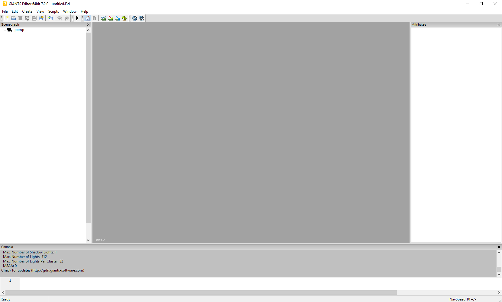
If you start up the Editor, you might not have all the panel windows open. To open other panel windows open the menu option window and enable the panel you want. You can adjust the width and height of the panels by dragging the outlines and if you want to close a window you can simply press the cross right of the panel name.
Viewport
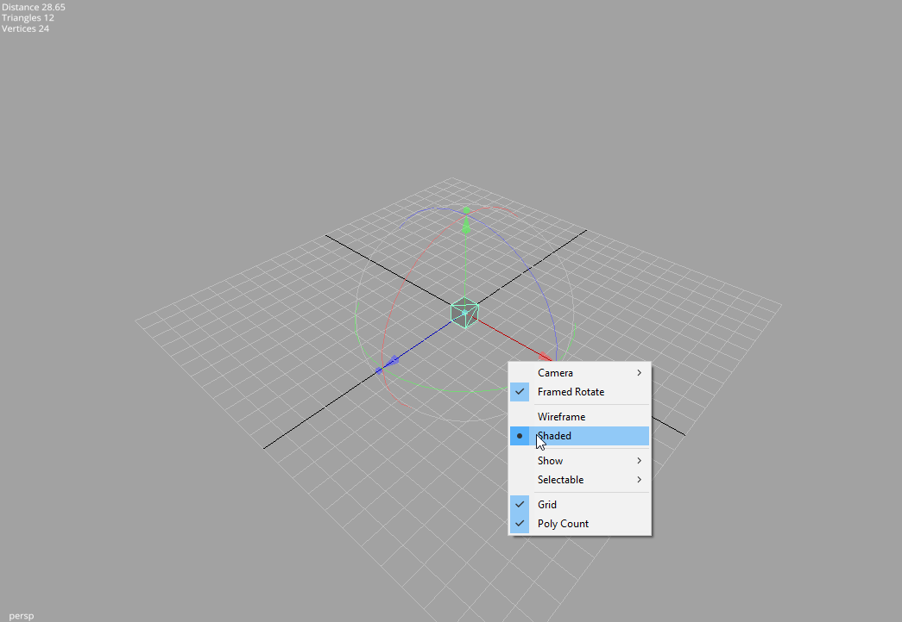
Navigation
The navigation is quite like in Maya. If you have nothing open in your editor I suggest you quickly open a simple i3d file otherwise you won�t see much of an effect. If its to dark in your scene just create a light by going to Create�>Light.Some shortcuts:
LMB = Left Mouse Button
RMB = Right Mouse Button
MMB = Middle Mouse Button
Alt + LMB = Press and hold the Alt-Key and the left mouse button.
Alt + LMB is rotating the camera.
Alt + RMB moves the camera forward and backward.
Alt + MMB causes the camera to pan.
If you don�t have a middle mouse button, you can press LMB and RMB instead.
View Options
By simply right-clicking into the viewport panel you get the View Options. Sometimes it�s useful too use different cameras in a scene. You can create them once and then with the View Options you can choose the camera to view at your scene from different angles quickly.You might notice that if you rotate, the camera is rotated. If you have a big level this behaviour is very useful, but if you want to look at one particular object this can be quite awkward. To change the rotation to Framed Rotate you first have to select your object either by clicking on it directly or by choosing it from the scene-graph and the framing the selected object by pressing the F key. Now you can simply click (RMB) on the screen to open the View Options and choose Framed Rotate. Now the camera is rotating around your the last framed object.
With solid or wireframe you can choose if you want the view shaded.
If you have large scenes, you can toggle the visibility of lights, audio sources, physics and the cameras by checking them on the show submenu.
You can also use the Selectable submenu to toggle whether you can select lights, audio sources or cameras.
Furthermore you can toggle the grid and the polycount on and off.
Scenegraph Panel
A very useful feature of the GIANTS Editor is the scenegraph. If you don�t have it on the screen, just go to menu window and hit scenegraph. It is basically the same you have in Maya. It shows all objects you have in your scene and also the parent-child relationship between your objects.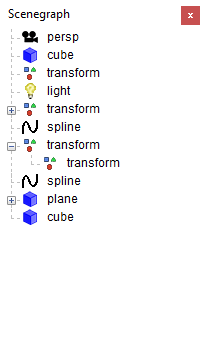
Let�s just make a little scene with some Transform Groups. The Transform Group is the basic building block of your scene. You can use a TransformGroup to move all the attached objects just by moving the Transform Group since the children inherit the transformations of the parent. To create a new Transform Group go to Create and hit TransformGroup. Now you can see it in the Scenegraph, its name is transform. To change the name just select it and go to the attributes panel. At the very top of the panel you can choose the name of your object. Make two TransformGroups and name them Parent and Child. If you move them around you see that their transformations are independent, the movement of the parent doesn�t affect the child. Now let�s make the appropriate relationship between the two. Select the child in the scenegraph panel and go to Edit->Cut. Now select your parent and hit Edit->Paste.
As you can see now, the child is now connected to the parent. If you now move around the parent, the transformation of the child is affected too whereas the child can be moved around without affecting the parent.
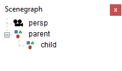
There can be 6 types of objects in your scene: Triangle Meshes, Nurbs Curves, Cameras, Transform Groups, Lights, Terrains and Audio Sources.
It is also possible to use CTRL+C to copy objets, CTRL+X to cut objects and CTRL+V to paste objects. Notice that pasted objects are always children of the currently selected object. If you want to paste an object on the highest hierarchy level of the scenegraph be sure that nothing is selected in the scenegraph. This can be achieved by clicking at an empty space in the scenegraph panel.
Attributes Panel
If you don�t see the attributes panel go to Windows->Attributes then select an object in the scenegraph or the viewport. One important thing to notice is, that if the background color of an attribute turns red, you entered a value that isn�t allowed. (eg scale values other than 1 for a dynamic rigid body object) The background color of animated attributes is yellow.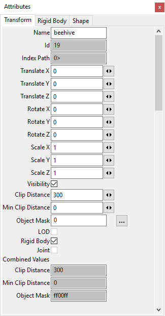
Toolbar
The toolbar looks like this. If your pointing on the icons with your mouse, a text with the functionality of the tool is displayed.
Let�s quickly go through them from left to right.
File Operations
- Create a new i3d-File
- Open a i3d-File
- Save the i3d-File
- Save the i3d-File as
- Import an i3d-file
- Undo last action
- Redo last action
- Play
- Stop
Toggle Local- World Mode
A handy tool is the toggle Local- World Mode, it changes the orientation of the viewport transform gizmo from the local space of your object to world space.
Terrain and Terrain Foliage
- Terrain Sculpt Mode
- Terrain Detail Texture Paint Mode
- Terrain Foliage Paint Mode
- Save Terrain Data
- Reload all Textures
- Reload Textures of selected objects
Terrain Editing
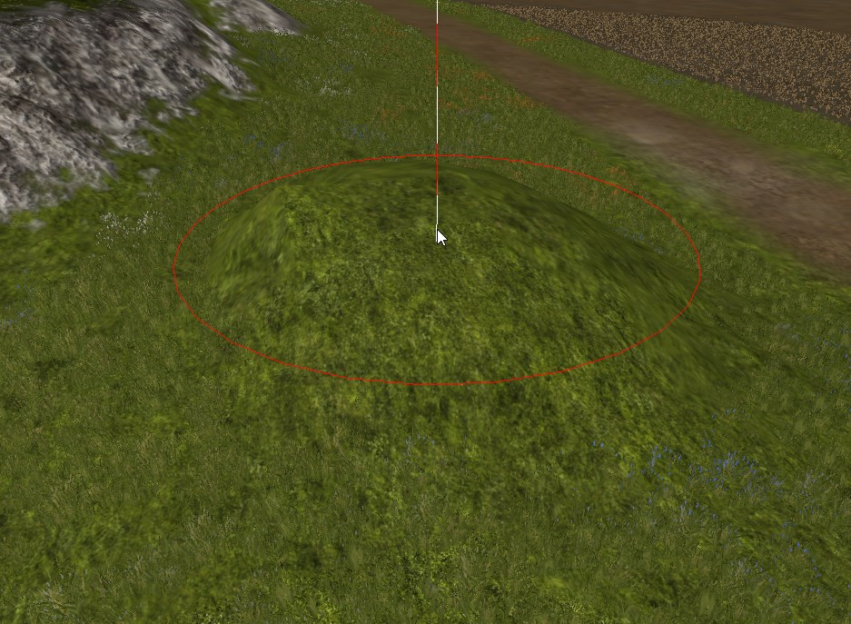
To test the terrain sculpting, just open the terrain test scene. Now you have a terrain to play with. Open the terrain editing panel with window->Terrain Editing. (If the scenegraph panel is still open it might cut off a bit, just close it to get more space.)
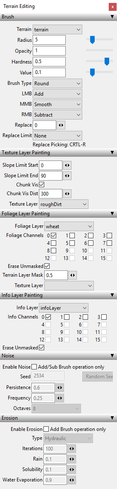
If the terrain sculpt mode is active now, you can rise or lower the surface of your terrain by using RMB and LMB. MMB can be used to smooth and the value defines the force with which you pull or push. What happens here is, that you are painting a height map, that defines the height of each point of your terrain by giving it a grey-value. The attributes Opacity, Hardness and the Value are defining the �brush� you are painting the height map with. Just play around with the setting.With the shortcuts "V" and "B" you can change size of the brush and with "N" and "M" you can change the opacity of the brush quickly.
In the terrain texture paint mode next to the terrain sculpt icon you can colorize your terrain with different textures.
The used texture layers are defined in the i3d-file. (If you want to change the texture layers, you have to open the i3d with a text editor and change the layers there) Just choose your texture and paint onto your terrain. With the Chunk vis checkbox on, you can see exactly which texture layers you used in a chunk by what amout. You can use as many texture layers as you want, but you are limited to a maximum of four texture layers per chunk.
With the Terrain Foliage Paint Mode active, you can paint your foliage onto your terrain, it`s the same thing as if you would paint onto your terrain - not with a texture but with foliage. LMB adds foliage, RMB removes foliage.
User Attributes
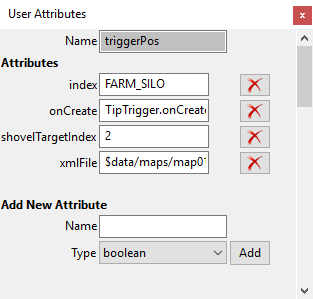
The user attributes panel is typically not visible if you open the editor for the first time. So go to Windows->User Attributes. Select an object in the scenegraph to see its user attributes.
User Attributes can be defined in the editor and then be used in the engine (eg. within a script). This enables you to define object specific attributes for every object in the scene.
Scripting
Here you can execute script snippets. With ENTER, you can add new lines. SHIFT+ENTER will execute the code in the text field.Type in the following:
|
print("hello world from the GIANTS Editor");
|
Then hit SHIFT+ENTER and the string is printed out above.
The scripting can be useful for many things. For example you can run this script snippet to test the fog settings in an i3d scene:
|
setFog("exp2", 0.002, 0, 0.8, 0.81, 0.97);
|
Replace Dialog
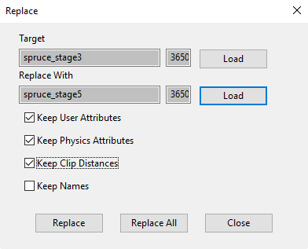
If you want to replace an object in your scene, you can go to Edit->Replace to open the replace panel. Select the object you want to replace, then hit load. Do likewise with the object you want to replace with and choose whether you want to keep the User Attributes or not. Now you can replace one single object by hitting replace or you can replace all objects that are similar to the one you selected by hitting replace all.
Note: replace all does only work with single objects, but not with hierarchies of objects, however the single replace function works.
This feature is quite useful because you can use it to substitute an object reference feature within your i3d scene file.
Interactive Placement
This is a really nice feature of the editor, so you should try it at least once!To place an object on the surface of another object, you can simply select the object you want to place and then press CTRL + B + LMB, while pointing at your desired location. The selected object will then instantly be set to the location you�ve chosen.
Hint: you can do this with all your objects within your scenegraph and also with the camera or light sources. E.g. you can select the current camera and then place the camera at a location far away, allowing for fast relocation of the camera.
If you keep the LMB pressed and hit CRTL or SHIFT you can clone the selected object at the currect mouse position. CRTL will just clone the object while SHIFT will add a random rotation in the y-axis. (Very useful feature if you want to create a forest with hundreds of randomly rotated trees for instance)
Other functionality
Edit->Clear Stacks: This clears the undo/ redo history.
Edit->Move to Camera: Moves the selected object in front of the camera
Navigation Speed: Moves the camera faster or slower. Use - and + to ajust the speed.
Keyboard short-cuts
| Key | Function |
|---|---|
| Alt + LMB | Rotate camera |
| Alt + MMB | Pan camera |
| Alt + RMB | Zoom camera |
| Alt + LMB + RMB | Move camera up or down and left or right camera |
| F | Frame selected object |
| - | Decrease navigation speed |
| + | Increase navigation speed |
| Ctrl-S | Save |
| Ctrl-Z | Undo |
| Ctrl-X | Cut |
| Ctrl-C | Copy |
| Ctrl-V | Paste |
| Delete | Delete |
| Ctrl-D | Duplicate |
| Ctrl-F | Move to Camera |
| Ctrl-B | Interactive placement (hold left mouse button to move around) |
| Shift | Interactive placement paint |
| Ctrl | Interactive placement paint with random rotation around y axis |
| Ctrl-R | Pick replace value in viewport (Terrain edit modes) |
| V | Decrease brush radius |
| B | Increase brush radius |
| N | Decrease brush opacity |
| M | Increase brush opacity |
| F8 | Toggle stats |
| Shift + Enter | Execute Script (Script Window) |
Exporter
Autodesk Maya1 i3d exporter
To generate i3d files of your 3d-models you can use the exporter plugin for Autodesk Maya. The GIANTS Editor and the GIANTS Engine can only load i3d files. This section of the documentation will show you, how to export i3d files with the I3D exporter plugins in Autodesk Maya. The first thing you probably want to do is to install the exporter plugins in Autodesk Maya.
Installing I3D exporter plugin
Step 1Place the files I3DExportUI.mel, I3DExportValidate.mel and I3DExporter2008.mll into the folder "C:/Documents and Settings/<USERNAME>/My Documents/maya/scripts".
Step 2
Start Maya and open the Script Editor window.
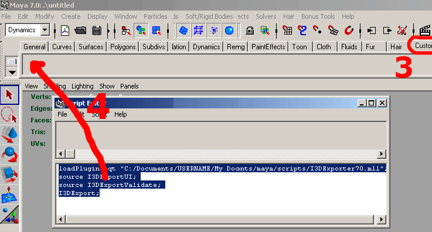
Step 3
Select custom shelf tab
Step 4
Type the following commands in the lower portion of the Script Editor:
|
loadPlugin -qt "C:/Documents and Settings/<USERNAME>/My Documents/maya/scripts/I3DExporter2008.mll";
source I3DExportUI; source I3DExportValidate; I3DExport; |
Highlight the commands, then use the middle mouse button, to drag the highlighted MEL commands to the shelf.
Note:
- Maya don't like backslashes so replace them with slashes.
- Replace <USERNAME> with your username.
- The file path can be different depending on the language of your operating system (eg. C:/Dokumente und Einstellungen/<USERNAME>/Eigene Dateien/maya/scripts/I3DExporter2008.mll)
Step 5
Copy the I3D_icon.bmp into the folder "C:/Documents and Settings/<USERNAME>/My Documents/maya/2008/prefs/icons". Edit shelf to replace the default icon with the one enclosed.
Preparing your 3d-model for export
Before you can actually use the exporter, it�s wise to check certain things with your 3d-model in Maya which can cause issues later in the editor or the engine.In the Channel-Box you see the transformations of your selected object.
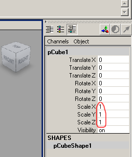
The ScaleX, ScaleY and ScaleZ of your object should be 1 1 1.
If you just plan to use this object as a static mesh or with no physics at all you could export it with any scale you want, but if you want to simulate your object in the engine (as a dynamic or kinematic rigid body object) the scale must be 1 1 1 otherwise the physics simulation will produce incorrect results.
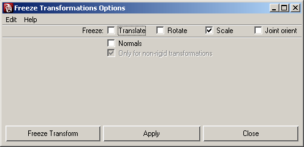
If you have an object with scale, you can easily get rid of the scale. Go to the Modify-Panel, and select the option box right of the Freeze Transformations. The Freeze Transformations dialog window opens. You can select the checkbox scale and hit apply.
Note: Please refer to the artwork guide for further information about asset conditioning for the engine.
I3D exporter usage
Start the exporter dialog with a click on the I3D exporter icon you have created on your custom shelf (see Installing I3D exporter plugins)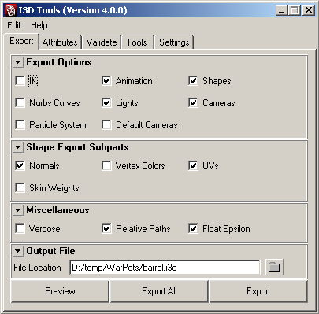
Export Panel
The export panel is quite self-explanatory. In the export options part you can include and exclude parts from exporting (IK, Animation, Shapes, Nurbs Curves, Lights, Cameras, Particle Systems and/or Default Cameras). The Shape Export Subparts section allows you to control which subshape attributes are exported (Normals, vertex Colors, Texture Coordinates and/or Skin Weights).
The miscellaneous section has this options:
- Verbose, display verbose information in output window during the export
- Relative Paths, generate relative paths for texture files
- Float Epsilon, truncate values within epsilon range to zero. Epsilon: [-1e-5, 1e-5]
Buttons
- Preview, exports whole scene to a temporary file and starts the editor
- Export All, exports the whole scene
- Export, exports only currently selected objects
Attributes Panel
In the attributes panel you can load and save attributes of your objects those attributes will be saved into the Maya file and are translated into the correct i3d attributes when you export to a i3d file.
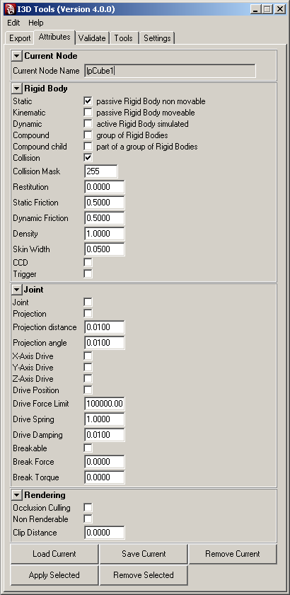
The first thing you have to do here is, that you must press the "Load Current" button at the bottom in order to load the attibutes of your object. Otherwise everything is unchecked and is not showing the attributes that are currently active on you object. So be sure, to hit this button first.
Current Node
Here you can see the name of your current working object.
Rigid Body
This section handles all the attributes regarding to physics rigid bodies.
Joint
Here you can define your joint-attributes in detail. One thing you might miss here are the joint limits, they must be defined within Maya, since your object can have many joints with different limits. You can define the limit of a joint angle by the limit informations of your transform-object.
Rendering
- Occlusion Culling, Objects that are entirely covered by other objects may be culled and thus not rendered at all. This option can increase the rendering performace in the engine if you have big objects containing much smaller objects, for instance a house. If you activate the occlusion culling on the root-node of the house all its childs are also not rendered, if the house is complete covered behind other objects. However, you should not apply this attribute on too many small objects because it is one more task for the engine.
- Non Renderable, With this option a objects will not be rendered at any time. Use this option for collision geometry. If you have complex objects with sub-objects attached, be careful with this checkbox since this attribute is also going to affect all the attached children.
- Clip Distance, This value defines how far the object is still going to be rendered. If you have a large scene and tons of objects this is a powerful method to keep your framerate high.
Validate Panel
With this panel you can validate if one of your objects have an incorrect pivot. In Maya your pivot can have a local and a world space attribute which you can find in the attribute editor on the right side. The x y and z values of both, local and world-space have to be 0 0 0 otherwise you will get a warning. You can fix incorrect pivots with the FreeezeToPivot option in the tools panel.
Tools
If you have validated your objects and a local pivot was not set to 0 0 0, you can quickly fix affected objects with the FreeezeToPivot button.
Known issues
| Issue | Solution |
|---|---|
| place2dTexture node information is ignored | Don't modify place2dTexture nodes and operate directly on the texture coordinates |
| Polygons with more than 4 sides and/or holes are ignored | Triangulate affected polygons (Modeling->Polygons->Triangulate) |
Material export options
Mapping between Maya and i3d material attributes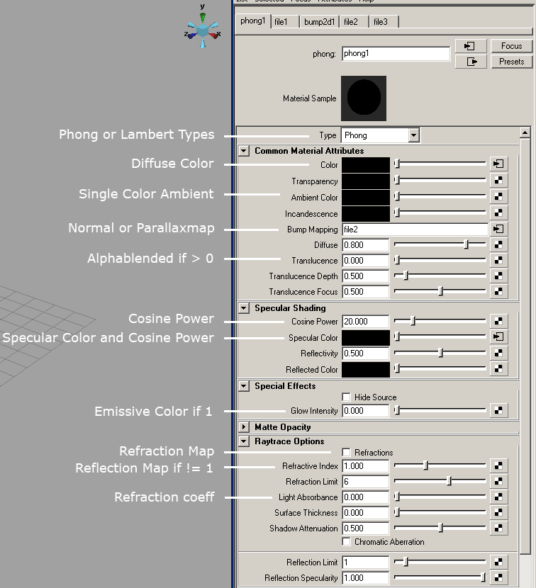
Autodesk 3ds MAX2 i3d exporter
Installing I3D exporter plugin
Copy the plugin file I3DExporter2008.dle or I3DExporter2009.dle into this directory:%3DSMAX installation path%/plugins/
On a Windows XP (english version) this would be this path:
C:\Program Files\Autodesk\3ds Max 2009\plugins
for example.
Blender i3d exporter
Installing I3D exporter plugin (Windows)
- Install Python Runtime 2.6
- Setup the environment variable PYTHONPATH to the python installation path. Also add DLLs and LIB directory.
Example: PYTHONPATH = C:\Python26;C:\Python26\DLLs;C:\Python26\Lib -
Copy blenderI3DExport.py to Blenders scripts directory.
(eg. C:\Documents and Settings\\Application Data\Blender Foundation\Blender\.blender\scripts)
Installing I3D exporter plugin (Linux)
You'll find a hidden directory called ".blender" in your home directory. Inside there's a sub-directory called "scripts", place the file blenderI3DExport.py there. Restart Blender.1 Autodesk Maya is a registered trademark of the Autodesk Corp.
2 Autodesk 3ds MAX is a registered trademark of the Autodesk Corp.
Content Creation - Artwork Guide
Autodesk Maya
Set correct normals
Adjust normals to match topology. Use hard edges for cubic and soft edges for curved surfaces.
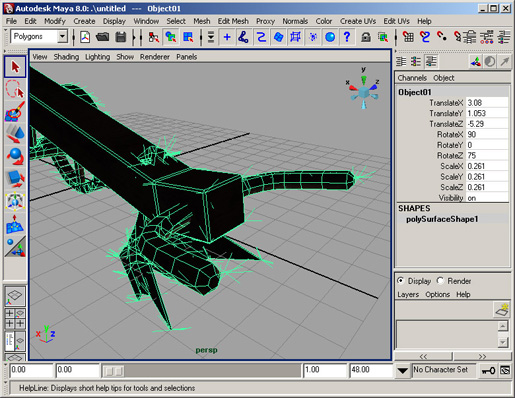
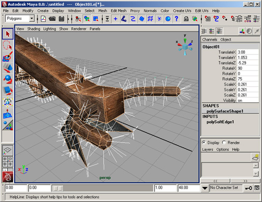
Disable double sided option
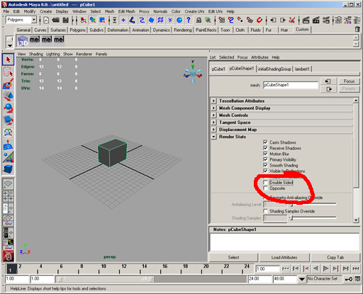
Remove zero area polygons
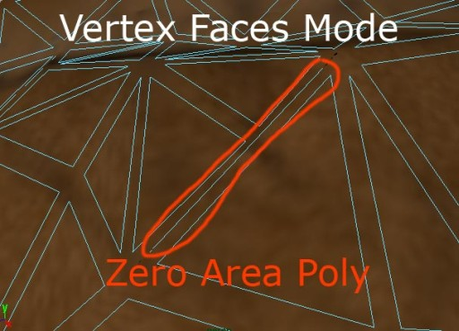
Eliminate T-Injunction
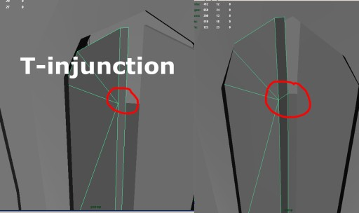
Autodesk 3DS MAX
Remove useless polygons
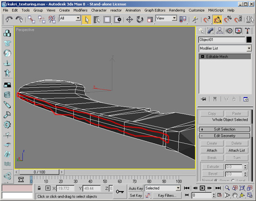
Generate normalmaps for details
Generate Normalmaps for appropriate details in the geometry.
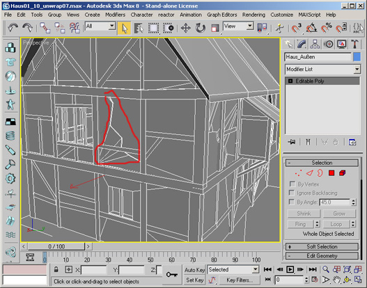
Flip edges
Flip/turn edges to match topology of the polygon mesh.
Retriangulation of the polygon mesh is a good starting point. This works only with Editable Polys
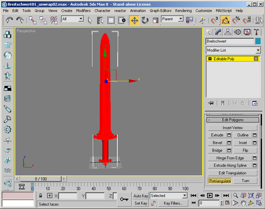
Convert to a Editable Mesh
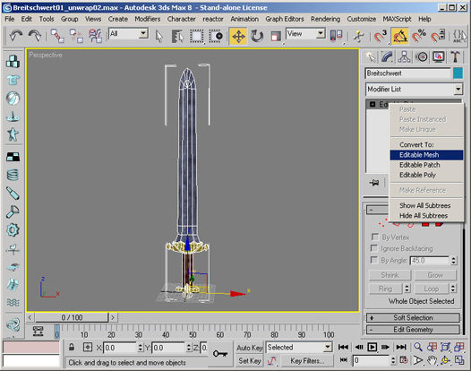
Flip/Turn individual edges manually
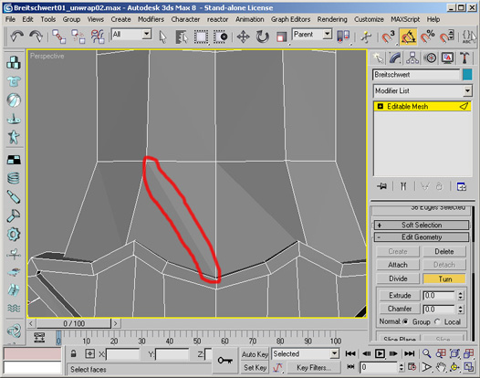
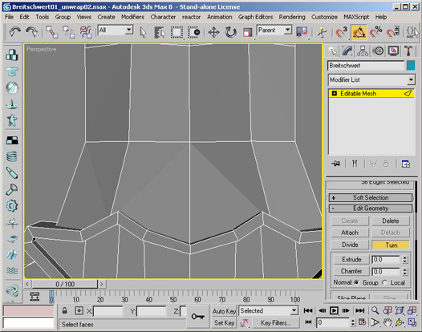
Disable two sided material option
Two sided materials are not supported in the engine and have to be replaced by an inverted copy of the affected polygons.
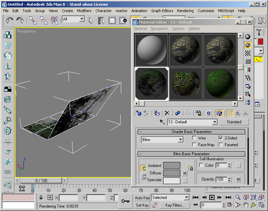
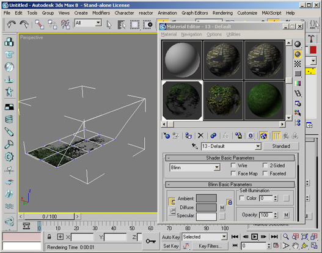
Used operations
- Disable 2-Sided checkbox material property
- Select Mesh
- Clone
- Select clone
- Modifier: Polygon mode, select affected polygons and flip normals
- Delete unused faces from cloned mesh
- Attach cloned mesh to original mesh
- Modifier: Vertex mode and weld vertices
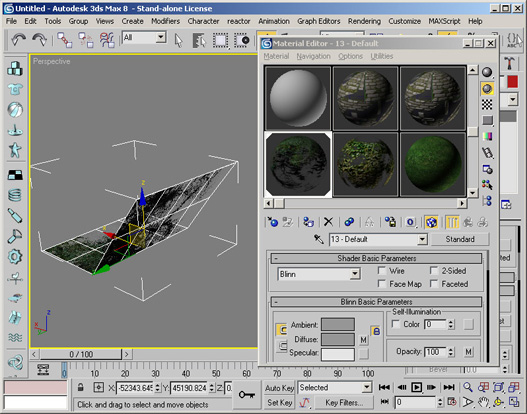
Set correct normals
Adjust normals to match topology. Use hard edges for cubic and soft edges for curved surfaces.
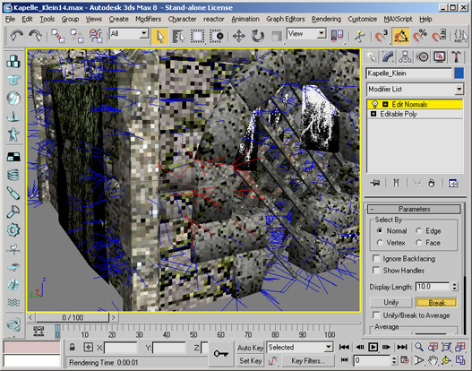
Used operations
- Select Mesh
- Normal Modifier
- Select affected normals and break them
- Fine tune normals manually (optional)
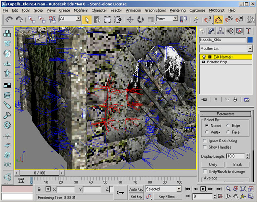
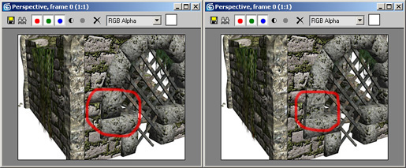
Merge to single polygon mesh
Merge groups of objects to a single mesh for optimal in-game performance.
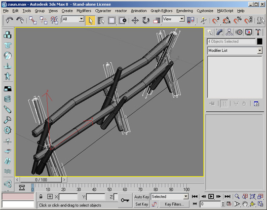
Used operations
- Select one object
- Modifier: Object mode and attach list
- Select objects to merge
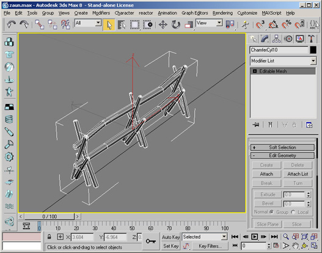
Texturing
JPEG compression artifacts
Never use the JPG format to store textures. Each time a jpg file is stored the quality of the image decreases. Even if the compression quality is set to 100%.
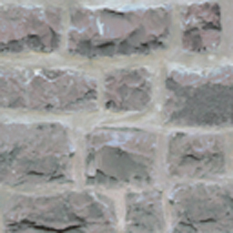
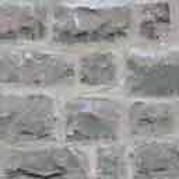
Saved once as png from orignal texture (left), saved multiple times as jpg (right)
Non-Power-of-Two textures
Use power-of-two textures but you can use non-squared textures. As a general
rule you should make your textures as big as they are in pixels when beeing
projected onto the screen in the game.
Eg. if you want to texture a fullscreen squad, you probably want to use a 1024x1024px to 2048x1024px sized texture.
Normalmap textures should be at least as big as the diffuse textures or even twice as big.
Texture size
Texture size must be 2048x2048 pixels or smaller. Bigger textures are not supported on older graphics cards (eg. GeforceFX, Radeon9xxx, Radeon8xx and Intel onboard graphic chips).
Generate maps for parallaxmapping
Requirements
The Nvidia Photoshop Normal Map Filter plug-in from Nvidia. This plug-in can be downloaded from
developer.nvidia.com
- First, you need a greyscale image or a bump map as the base for the Parallax Map. Please note that most of the time, you will have to convert this greyscale image to a RGB image. You can do this with select Image > Mode > RGB Color (menu bar).
- Go to the "Window" tab and select "Show Channels". In the channel window, click the 'Create New Channel' icon on the bottom right, just left of the Trash Icon. A new channel "Alpha 1" will appear.
- Click one of the Color channels, press CTRL-A then CTRL-C to copy the channel informations to the clipboard for later use.
- In the channel window select the RGB channel with shift and the left mouse button. All channel tabs should now be marked or accordingly selected.
- Go now to the "Filter" menu and select "nvTools/NormalMapFilter...". In the Height Generation section, select InvertY.
To create a Parallax Map you also have to select Height in the Alpha Field Section.
With the "Scale" setting you can alter the intensity (depth) of the normal map. The "Filter Type" setting,
defines how precise the normal map has to be. "4 sample" means precise, whereas 9x9 means rough. Click "OK" to proceed.
- You should now have a normal map, combined with a bump map in the Alpha Channel.
- Now you have to insert the previous saved channel information to the "Alpha 1" channel. Select the alpha channel with your left mouse button and then press CTRL-V to paste the Heightmap image into the channel.
- To increase the quality of your Parallax Map you can try also to apply a low gaussian filter to the alpha channel. Further you can reduce the contrast to get better results.
- Save the Image as png with transparency (RGBA 32 bit).
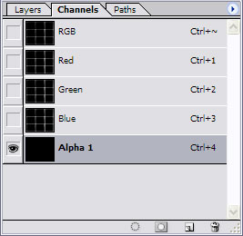
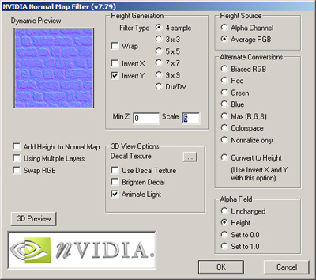
I3D
Introduction
I3D is an open eXtensible Markup Language (XML) file format.The purpose of i3D is to interchange 3D assets between applications and platforms without loss of information.
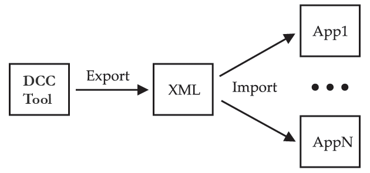
A vaild I3D file can have up to seven parts: Textures, Materials, Shapes, Dynamics, Scene graph, Animation and Userdata. Dependent on application each part can be omitted.
The XML Schema language is used to describe the I3D feature set. Download: I3D 1.6 Schema
Features
- Scenegraph hierarchy with
- TransformGroups/Bones: translation, rotation, scale and visibility
- Lights: ambient, point, directional and spot lights
- Cameras: field of view, near and far clipping plane
- Shapes: meshes and nurbs curves (supports geometry instancing)
- Particle Systems
- Animation
- Animation sets
- Clips
- Keyframes: translation, rotation, scale and visibility
- Morph Targets
- User Attributes
- Dynamics
- Particle Systems (Sprite based)
- Surface Emitter
- Gravity Fields
- Air Fields
- Particle Systems (Sprite based)
- Meshes
- Vertices
- Normals
- Vertex colors
- Skin weights
- Texture coordinates (including multiple uv sets)
- Faces (vertex color, normals and texture coordinates per face)
- Curves
- Nurbscurves
- Shader/Materials
- Multitextures (arbitrary layered textures)
- Lightmaps
- Bumpmaps/Normalmaps
- Environmentmaps
- Specularmaps
Overview
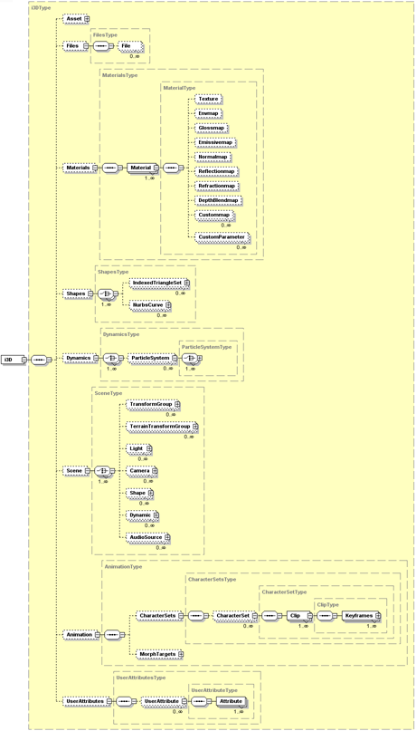
{kind=link}
Specification
General Layout
|
<?xml version="1.0" encoding="iso-8859-1"?>
<i3D name="MyScene" version="1.6" xsi:noNamespaceSchemaLocation="http://i3d.giants.ch/schema/i3d-1.6.xsd"> <Files>..</Files> <Materials>..</Materials> <Shapes>..</Shapes> <Dynamics>..</Dynamics> <Scene>..</Scene> <Animation>..</Animation> <UserAttributes>..</UserAttributes> </i3D> |
Coordinate Systems
I3D uses a right-handed coordinate system.Files
All used file references are defined here. File handles are mapped to the corresponding filenames.
|
<Files>
<File fileId="1" filename="myTexture1.png" relativePath="true"/> ... </Files> |
Materials
Materials used in the materials attribute of Shape nodes within the scenegraph section are defined in this section.
|
<Materials>
<Material name="myShader_001" materialId="12"> <Texture fileId="1"/> </Material> ... </Materials> |
Shapes
Shapes are defined here and referenced from the Scene graph section. This mechanism allows multiple instancing of shapes.
|
<Shapes>
<IndexedTriangleSet name="myMesh01" shapeId="1"> ... </IndexedTriangleSet> ... </Shapes> |
Shape node types
IndexedTriangleSet
| Attribute | Description | Type | Optional |
|---|---|---|---|
| name | Name of Shape | string | no |
| shapeId | Shape id | integer | no |
| Element | Description | Type | Cardinality |
|---|---|---|---|
| Vertices | List of vertices | complex | 1 |
| Triangles | List of triangles | complex | 1 |
| Subsets | List of Subsets | complex | 1 |
Vertices
| Attribute | Description | Type | Optional |
|---|---|---|---|
| count | Number of vertices | integer | no |
| normal | Normal | boolean | yes |
| uv0 | UV set 0 | boolean | yes |
| uv1 | UV set 1 | boolean | yes |
| uv2 | UV set 2 | boolean | yes |
| uv3 | UV set 3 | boolean | yes |
| color | Vertex color | boolean | yes |
| blendweights | Blend weights | boolean | yes |
| Element | Description | Type | Cardinality |
|---|---|---|---|
| v | Vertex | complex | 1..n |
v
| Attribute | Description | Type | Optional |
|---|---|---|---|
| p | Vertex position | string | no |
| n | Vertex normals | string | yes |
| t0 to t16 | Texture coordinate | string | yes |
| c | Vertex colors | string | yes |
| bw | Bone weights | string | yes |
| bi | Bone indices | string | yes |
Triangles
| Attribute | Description | Type | Optional |
|---|---|---|---|
| count | Number of triangles | integer | no |
| Element | Description | Type | Cardinality |
|---|---|---|---|
| t | Triangle | complex | 1..n |
t
| Attribute | Description | Type | Optional |
|---|---|---|---|
| vi | Vertices index | string | no |
Subsets
| Element | Description | Type | Cardinality |
|---|---|---|---|
| Subset | Subset | complex | 1..n |
Subset
| Attribute | Description | Type | Optional |
|---|---|---|---|
| firstVertex | First vertex | integer | no |
| numVertices | Number of vertices | integer | no |
| firstIndex | First index | integer | no |
| numIndices | Number of indices | integer | no |
Example
|
<IndexedTriangleSet name="myMesh01" shapeId="1">
<Vertices count="30" uv0="true"> <v c="-0.50 -0.5 0.50" t0="0 0.1 0.3 0.3 0.2 0 0.1 1"/> <v c="0.49 -0.5 0.50" t0="1 0.9 0.3 0.3 0.6 0 0.1 1"/> <v c="-0.50 0.49 0.50" t0="0 0.1 0.9 0.3 0.2 0 0 1"/> ... </Vertices> <Triangles count="40"> <t vi="0 1 3"/> <t vi="2 3 5"/> <t vi="4 5 7"/> ... </Triangles> <Subsets count="1"> <Subset firstVertex="0" numVertices="30" firstIndex="0" numIndices="40"/> </Subsets> </IndexedTriangleSet> |
NurbsCurve
| Attribute | Description | Type | Optional |
|---|---|---|---|
| name | Name of Shape | string | no |
| shapeId | Shape id | integer | no |
| degree | Degree | integer | no |
| form | Form (stored as: "open", "close" or "periodic") | string | no |
| Element | Description | Type | Cardinality |
|---|---|---|---|
| cv | List of contol vertices | complex | 3..n |
cv
| Attribute | Description | Type | Optional |
|---|---|---|---|
| c | Contol vertex (stored as "x y z") | string | no |
Example
|
<NurbsCurve name="cameraPathShape" shapeId="1" degree="3" form="periodic">
<cv c="-160.4501888 7.53270339 82.4246445"/> <cv c="-72.07301868 2.962592169 111.1353409"/> <cv c="-14.67712792 3.470019386 126.2614971"/> <cv c="15.12607817 8.251274441 47.11430616"/> <cv c="30.05244121 12.88635426 26.06245926"/> <cv c="34.16515005 11.5454009 -1.548135874"/> <cv c="-86.27624814 11.50889609 -65.1259517"/> <cv c="-88.5073931 11.67542369 -86.80101523"/> <cv c="-174.5511508 8.575730303 -67.03592031"/> <cv c="-189.2139061 8.539901228 -43.65303468"/> <cv c="-199.9735277 8.470538543 63.31385212"/> <cv c="-191.3309447 8.438562697 75.55727406"/> <cv c="-176.8774992 8.259085125 81.87273025"/> </NurbsCurve> |
Dynamics
Dynamic objects are defined in this part and referenced from the Scene graph section.
|
<Dynamics>
<ParticleSystem name="emitter1" dynamicId="1" type="sprite" rate="0.004" lifespanInfinite="false" speed="0.01" speedRandom="0" tangentSpeed="0" normalSpeed="1" lifespan="10000" maxCount="1000" spriteScaleX="50" spriteScaleY="50" depthSort="false" emitterShape="pCubeShape1" shader="lambert2"> <Gravity force="0 -3 0"/> <Air velocity="2 0 0"/> </ParticleSystem> </Dynamics> |
Scenegraph
The Scene graph hierarchy (transformations, bones, joints, shapes, lights, cameras and particle systems) are stored in this section. Shapes, materials and particle systems are stored as references.
|
<Scene>
<TransformGroup name="myGroup1" translation="1.25 0 -9" nodeId="47"> <Shape name="mySphere" materialIds="1" shapeId="1" nodeId="48"/> <TransformGroup name="myGroup2" rotation="90 0 270" nodeId="49"> <Shape name="mySphere2" materialIds="1" shapeId="2" nodeId="50"/> </TransformGroup> ... </TransformGroup> ... </Scene> |
Scene graph node types
TransformGroup
| Attribute | Description | Type | Optional |
|---|---|---|---|
| name | Name of TransformGroup | string | no |
| translation | Translation | complex | yes |
| rotation | Rotation, /2009.03.28: euler order ZY'X'' / | complex | yes |
| scale | Scale | complex | yes |
| visibility | Visibility | boolean | yes |
| kinematic | Kinematic object | boolean | yes |
| dynamic | Dynamic object | boolean | yes |
| static | Static object | boolean | yes |
| compound | Compound parent | boolean | yes |
| compoundChild | Compound child | boolean | yes |
| collision | Enable collision | boolean | yes |
| ccd | Continuous collision detection | boolean | yes |
| trigger | Trigger | boolean | yes |
| cloth | Cloth | boolean | yes |
| restitution | Restitution | float | yes |
| staticFriction | Static friction | float | yes |
| dynamicFriction | Dynamic friction | float | yes |
| skinWidth | Skin width | float | yes |
| density | Density | float | yes |
| collisionMask | Collision mask | integer | yes |
| joint | Joint | boolean | yes |
| breakableJoint | Breakable joint | boolean | yes |
| jointBreakForce | Joint break force | double | yes |
| jointBreakTorque | Joint break torque | double | yes |
| projection | Enable joint projection | boolean | yes |
| xAxisDrive | Enable x axis drive | boolean | yes |
| yAxisDrive | Enable y axis drive | boolean | yes |
| zAxisDrive | Enable z axis drive | boolean | yes |
| drivePos | Enable drive position | boolean | yes |
| projDistance | Projection distance | double | yes |
| driveForceLimit | Drive force limit | double | yes |
| driveSpring | Drive spring | double | yes |
| driveDamping | Drive damping | double | yes |
| 2009.01.25: solverIterationCount | Solver iteration count | integer | yes |
| rotMinX | Rotation minimum x | double | yes |
| rotMinY | Rotation minimum y | double | yes |
| rotMinZ | Rotation minimum z | double | yes |
| rotMaxX | Rotation maximum x | double | yes |
| rotMaxY | Rotation maximum y | double | yes |
| rotMaxZ | Rotation maximum z | double | yes |
| transMinX | Translation minimum x | double | yes |
| transMinY | Translation minimum y | double | yes |
| transMinZ | Translation minimum z | double | yes |
| transMaxX | Translation maximum x | double | yes |
| transMaxY | Translation maximum y | double | yes |
| transMaxZ | Translation maximum z | double | yes |
| objectMask | Object mask | integer | yes |
| nodeId | Node reference id, used for Animation and UserAttributes section | integer | no |
| Element | Description | Type | Cardinality |
|---|---|---|---|
| TransformGroup | Transform group node | complex | 0..N |
| Shape | Shape node | complex | 0..N |
| Camera | Camera node | complex | 0..N |
| Light | Light node | complex | 0..N |
| Dynamic | Dynamic node (eg. particle system) | complex | 0..N |
Shape
| Attribute | Description | Type | Optional |
|---|---|---|---|
| shapeId | Shape reference id (reference to shapes section) | string | no |
| materialIds | List of used material ids (reference to materials section) | string | no |
| skinBindNodeIds | Skin bind node ids | string | yes |
| castsShadows | Casts shadows | boolean | yes |
| receiveShadows | Receive shadows | boolean | yes |
| clipDistance | Clip distance | double | yes |
| nonRenderable | Non renderable | boolean | yes |
Camera
| Attribute | Description | Type | Optional |
|---|---|---|---|
| fov | Field of view | double | no |
| nearClip | Near clipping plane | double | no |
| farClip | Far clipping plane | double | no |
Light
| Attribute | Description | Type | Optional |
|---|---|---|---|
| type | Light type | string | no |
| diffuseColor | Diffuse color | complex | yes |
| emitDiffuse | Emit diffuse | string | yes |
| specularColor | Specular color | complex | yes |
| emitSpecular | Emit specular | string | yes |
| castShadowMap | Cast shadow Map | boolean | yes |
| depthMapBias | Depth map bias | double | yes |
| depthMapResolution | Depth map resolution | integer | yes |
| shadowFarDistance | Shadow far fistance | double | yes |
| shadowTextureOffset | Shadow texture offset | double | yes |
| shadowExtrusionDistance | Shadow extrusion distance | double | yes |
| decayRate | Decay rate | integer | yes |
| coneAngle | coneAngle | double | yes |
| dropOff | dropOff | integer | yes |
| projTexture | Projective texture name | string | yes |
| range | Range | double | no |
5 Dynamic
| Attribute | Description | Type | Optional |
|---|---|---|---|
| dynamicId | Dynamic id (reference to dynamics section) | string | no |
Example
|
<Scene>
<Camera name="camera1" translation="0 2.00 6.47" rotation="-13.07 0 0" fov="54.43" nearClip="0.01" farClip="1000" nodeId="34"/> <Light name="pointLight1" translation="6.56 5.76 4.04" type="point" diffuseColor="1 1 1" range="10" nodeId="35"/> <TransformGroup name="group1" translation="1.35 0.96 0.81" nodeId="36"> <Shape name="pCubeShape1" rotation="-23.94 6.49 14.29" materialIds="1 2" shapeId="1" nodeId="37"/> </TransformGroup> </Scene> |
Animation
Motions are defined in this part. Clips are the basic building block and allow Non-Linear Animation by composing multiple clips.
|
<Animation>
<AnimationSets> <AnimationSet name="walk_crouched"> <Clip name="walk_crouched1Source" duration="1000"> <Keyframes nodeId="Hips"> <Keyframe time="0" translation="-0.467 13.504 39.842"/> <Keyframe time="333" translation="-0.559 12.915 39.370"/> <Keyframe time="1000" translation="-2.610 11.917 35.462"/> </Keyframes> <Keyframes node="Chest"> <Keyframe time="0" rotation="-1.013 -4.465 0.890"/> <Keyframe time="666" rotation="10.009 -6.667 4.381"/> <Keyframe time="1000" rotation="11.638 -3.906 4.115"/> </Keyframes> </Clip> </AnimationSet> </AnimationSets> </Animation> |
I3D Example: Quad
|
<?xml version="1.0" encoding="iso-8859-1"?>
<i3D name="myScene" version="1.6" xsi:noNamespaceSchemaLocation="http://i3d.giants.ch/schema/i3d-1.6.xsd"> <Files> <File fileId="1" filename="myTexture1.png"/> </Files> <Materials> <Material name="myShader_001" materialId="1"> <Texture fileId="1"/> </Material> </Materials> <Shapes> <IndexedTriangleSet name="myPolyObject" shapeId="1"> <Vertices count="3" uv0="true"> <v c="-0.50 -0.5 0.50" t0="0 0.1 0.3 0.3 0.2 0 0.1 1"/> <v c="0.49 -0.5 0.50" t0="1 0.9 0.3 0.3 0.6 0 0.1 1"/> <v c="-0.50 0.49 0.50" t0="0 0.1 0.9 0.3 0.2 0 0 1"/> </Vertices> <Triangles count="3"> <t vi="0 1 3"/> <t vi="2 3 5"/> <t vi="4 5 7"/> </Triangles> <Subsets count="1"> <Subset firstVertex="0" numVertices="3" firstIndex="0" numIndices="3"/> </Subsets> </IndexedTriangleSet> </Shapes> <Scene> <TransformGroup name="myGroup1" translation="1.25 0 -9"> <Shape name="myPolyObject" shapeId="1" materialIds="1"/> <TransformGroup name="myGroup2" translation="2.0 1.0 1.5" rotation="90 0 270"> <Shape name="polyObject" shapeId="1" materialIds="1"/> </TransformGroup> </TransformGroup> </Scene> </i3D> |
Test Scenes
| 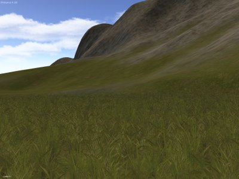 |
| Terrain and Foliage (terrain_test.i3d) |
| Water Shader (terrain_test.i3d) |
| 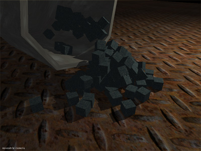 |
| Physics (physics_test.i3d) |
| 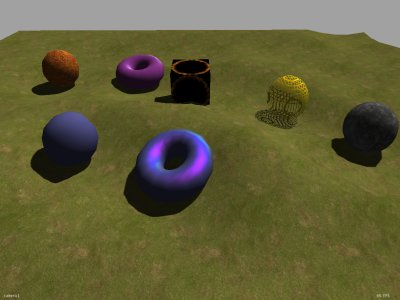 |
| Custom Shader (custom_shader_test_scene.i3d) |
| 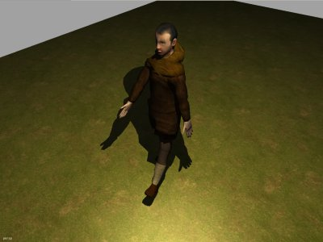 |
| Character Animation (character_animation_test.i3d) |
| 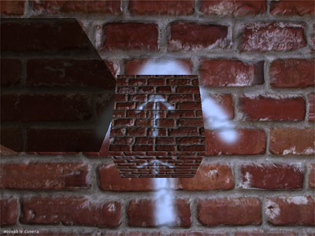 |
| Parallax Mapping (parallax_mapping_test.i3d) |
 |
| Level of Detail (level_of_detail_test.i3d) |
| 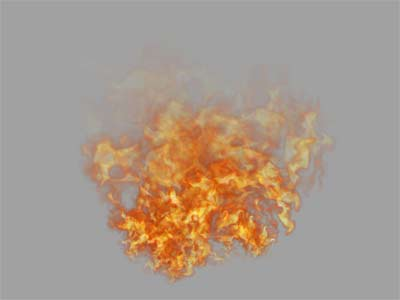 |
| Particle System (particle_system_test.i3d) |
17 November 2008
GIANTS SDK v4.1.1
GIANTS Editor v4.1.1
GIANTS Script Debugger v4.1.1
Maya Exporter Plugins v4.1.1
MAX Exporter Plugins v4.1.1
Blender Exporter Plugins v4.1.1
18 July 2008
GIANTS SDK v4.0
GIANTS Editor v4.0
Maya Exporter Plugins v4.0

- Christian Ammann (giants-software.ch cammann)
- Stefan Geiger (giants-software.ch sgeiger)
- Thomas Brunner (giants-software.ch tbrunner)